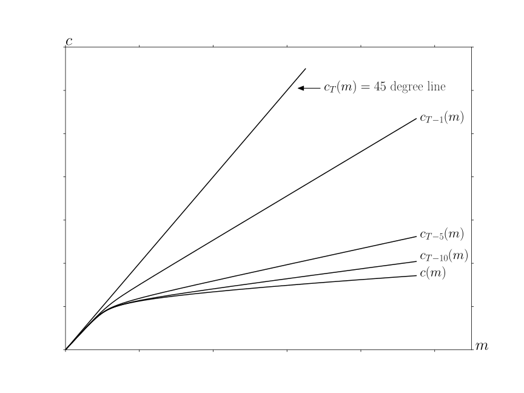
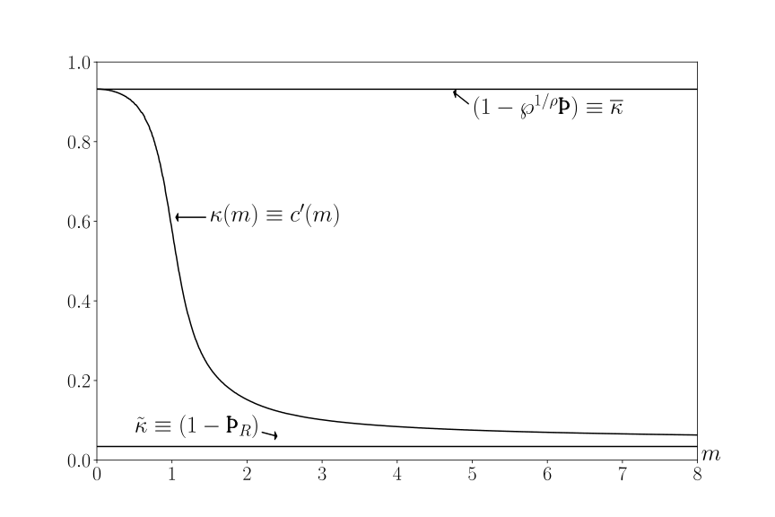
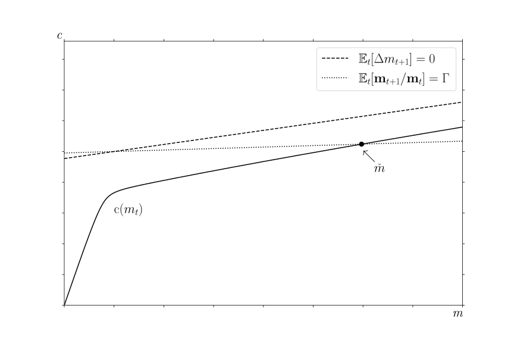

Abstract This paper builds foundations for rigorous and intuitive understanding of ‘buffer stock’ savingmodels (Bewley (1977)-like models with a wealth target), pairing each theoretical result withquantitative illustrations. After describing conditions under which a consumption function exists, thepaper articulates stricter ‘Growth Impatience’ conditions that guarantee alternative forms of stability— either at the population level, or for individual consumers. Together, the numerical tools andanalytical results constitute a comprehensive toolkit for understanding buffer stock models.
Keywords
Precautionary saving, buffer stock saving, marginal propensity
to consume, permanent income hypothesis, income fluctuation
problem
In the presence of realistic transitory and permanent shocks to income a laFriedman (1957)
and Muth (1960), only one further ingredient is required to construct a microeconomically
testable model of consumption: A description of preferences. Zeldes (1989) was
the first to calibrate a quantitatively plausible example; his paper spawned a
literature showing that such models’ predictions can match household life
cycle data reasonably well, whether or not explicit liquidity constraints are
imposed.1
A connected literature in macroeconomic theory, starting with Bewley (1977), has
derived limiting properties of related infinite-horizon problems, but only in models
more complex than the case with just shocks and preferences. The extra complexity
has been imposed because standard contraction mapping theorems (beginning
with Bellman (1957) and including those building on Stokey et al. (1989)) cannot
be applied when utility and/or marginal utility are unbounded. Many proof
methods also rule out permanent shocks a laFriedman (1957), Muth (1960),
and Zeldes (1989).2
This paper’s first contribution is to articulate conditions under which the infinite-horizon
Friedman-Muth(-Zeldes) problem (without complications like a consumption floor
or liquidity constraints) defines a contraction mapping problem whose limit is
sensible as the horizon approaches infinity. A ‘Finite Value of Autarky Condition’
is mostly sufficient (the other imposed condition, the ‘Weak Return Impatience
Condition’,3
is unlikely to bind). Because the infinite horizon solution is the limit of finite-horizon
recursions, many intermediate results are also useful for solving finite-horizon problems.
But the paper’s main theoretical contribution is to identify, for the infinite-horizon case,
conditions under which ‘stable’ values of the wealth-to-permanent-income ratio exist, either
for individual consumers (a consumer’s wealth can be predicted to move toward a ‘target’
ratio) or for the aggregate (the economy as a whole moves toward a ‘balanced growth’
equilibrium). The requirement for stability is always that the model’s parameters satisfy a
‘Growth Impatience Condition’ whose details depend on the quantity whose stability is of
interest. A model that exhibits stability of either kind qualifies as a ‘buffer stock’
model.4
Even without a formal proof of its existence, buffer stock saving has been intuitively
understood to underlie central quantitative results in heterogeneous agent macroeconomics; for
example, the logic of target saving is central to the claim by Krueger, Mitman, and
Perri (2016) in the Handbook of Macroeconomics that such models explain why,
during the Great Recession, middle-class consumers cut their spending more than
the poor or the rich. The theory below provides the rigorous basis for this claim:
Learning that the future has become more uncertain does not change the urgent
imperatives of the poor (their high means they — optimally — have little room to
maneuver). And, increased labor income uncertainty does not much change the
behavior of the rich because it poses little risk to their consumption. Only people in the
middle have both the motivation and the wiggle-room to respond by reducing their
spending.
Analytical derivations for the proofs also explain many other results familiar from the
numerical literature.
The paper begins by defining sufficient conditions for the problem to define a useful
(nondegenerate) limiting consumption function (and explains how the model relates to those
previously considered). The conditions are interestingly parallel to those required for the
liquidity constrained perfect foresight model; that parallel is explored and explained. This
analysis establishes limiting properties of the consumption function as resources approach
infinity, and as they approach their lower bound; using these limits, the contraction mapping
theorem is proven.
The next theoretical contribution demonstrates that a corresponding model with an
‘artificial’ liquidity constraint (a model that prohibits borrowing by consumers who could
certainly repay) is a limiting case of the model without constraints. The analytical appeal of
the unconstrained model is that it is both mathematically convenient (e.g., the consumption
function is twice continuously differentiable), and arbitraily close (cf. Section 2.10) to less
tractable models. The congenial environment makes the proof easier, and we define the
analogous proposition as holding (in the limit) if it continues to hold as the horizon extends to
infinity.
In proving the remaining theorems, the next section examines the key properties of the
model. First, as cash approaches infinity the expected growth rate of consumption and the
marginal propensity to consume (MPC) converge to their values in the perfect foresight
case. Second, as cash approaches zero the expected growth rate of consumption
approaches infinity, and the MPC approaches a simple analytical limit. Next, the central
theorems articulate conditions under which different measures of ‘growth impatience’
imply useful conclusions about points of stability (‘target’ or ‘balanced growth’
points).
The final section elaborates the conditions under which, even with a fixed aggregate interest
rate that differs from the time preference rate, a small open economy populated by
buffer stock consumers has a balanced growth equilibrium in which growth rates of
consumption, income, and wealth match the exogenous growth rate of permanent
income (equivalent, here, to productivity growth). In the terms of Schmitt-Grohé
and Uribe (2003), buffer stock saving is an appealing method of ‘closing’ a small
open economy model, because it requires no ad-hoc assumptions. Not even liquidity
constraints.5
2 The Problem
2.1 Setup
The infinite horizon solution is the (limiting) first-period solution to a sequence of
finite-horizon problems as the horizon (the last period of life) becomes arbitrarily
distant.
That is, for the value function, fixing a terminal date , we are interested in the term
in the sequence of value functions . We will say that the problem
has a ‘nondegenerate’ infinite horizon solution if, corresponding to that , as there is
a limiting consumption function which is neither everywhere
(for all ) nor everywhere.
Concretely, a consumer born periods before date solves the problem
where the Constant Relative Risk Aversion (CRRA) utility function
(1)
exhibits relative risk aversion .6
The consumer’s initial condition is defined by market resources and permanent
noncapital income , which both are positive,
(2)
and the consumer cannot die in debt,
(3)
In the usual treatment, a dynamic budget constraint (DBC) incorporates several
elements that jointly determine next period’s (given this period’s choices); for the
detailed analysis here, it will be useful to disarticulate and describe every step:
where indicates the consumer’s assets at the end of period , which translate
one-for-one into capital at the beginning of the next period, which (before the
consumption choice) grows by a fixed interest factor , so that is
the consumer’s financial (‘bank’) balances before next period’s consumption
choice;7
(‘market resources’) is the sum of financial wealth and noncapital income
(permanent noncapital income multiplied by a mean-one iid transitory
income shock factor ; transitory shocks are assumed to satisfy ).
Permanent noncapital income in is equal to its previous value, multiplied by a growth
factor , modified by a mean-one iid shock , satisfying
for (and is the degenerate case with no
permanent shocks).
Following Zeldes (1989), in future periods there is a small probability
that income will be zero (a ‘zero-income event’),
(4)
where is an iid mean-one random variable () whose distribution satisfies where
.8
Call the cumulative distribution functions and (where is derived trivially
from (4) and ). For quick identification in tables and graphs, we will call this the
‘Friedman/Muth’ model because it is a specific implementation of the Friedman (1957) model
as interpreted by Muth (1960).
The model looks more special than it is. In particular, a positive
probability of zero-income events may seem objectionable (despite empirical
support).9
But a model with a nonzero minimum value of (motivated, say, by the existence of unemployment
insurance) can be redefined by capitalizing the PDV of minimum income into current market
assets,10
transforming that model back into this one. And no key results would change if the transitory
shocks were persistent but mean-reverting, instead of IID. Also, the assumption of a positive
point mass for the worst realization of the transitory shock is inessential, but simplifies the
proofs and is a powerful aid to intuition.
This model differs from Bewley’s (1977) classic formulation in several ways. The CRRA
utility function does not satisfy Bewley’s assumption that is well-defined, or that
is well defined and finite; indeed, neither the value function nor the marginal value function
will be bounded. It differs from Schectman and Escudero (1977) in that they impose liquidity
constraints and positive minimum income. It differs from both of these in that
it permits permanent growth in income, and also permanent shocks to income,
which a large empirical literature finds to be of dominant importance in micro
data.11
It differs from Deaton (1991) because liquidity constraints are absent; there are separate
transitory and permanent shocks (a laMuth (1960)); and the transitory shocks here can
occasionally cause income to reach zero.It differs from models found in Stokey et. al. (1989)
because neither liquidity constraints nor bounds on utility or marginal utility are
imposed.1213Li
and Stachurski (2014) show how to allow unbounded returns by using policy function
iteration, but also impose constraints.
The paper with perhaps the most in common is Ma, Stachurski, and Toda (2020),
henceforth MST, who establish the existence and uniqueness of a solution to a general income
fluctuation problem in a Markovian setting. The most important differences are that MST
impose liquidity constraints, assume that , and that expected marginal utility of
income is finite (. These assumptions are not consistent with the combination
of CRRA utility and income dynamics used here, whose joint properties are key to the
results.14
2.2 The Problem Can Be Normalized By Permanent Income
We establish a bit more notation by reviewing the familiar result that in such problems
(CRRA utility, permanent shocks) the number of states can be reduced from two ( and
) to one . Value in the last period is ; using (in the last line in (5)
below) the fact that for our CRRA utility function, , and generically
defining nonbold variables as the boldface counterpart normalized by (as with
), consider the problem in the second-to-last period,
Now, in a one-time deviation from the notational convention established in the last
sentence, define nonbold ‘normalized value’ not as but as , because this
allows us to exploit features of the related problem,
where is a ‘permanent-income-growth-normalized’
return factor, and the reformulated problem’s first order condition
is15
This logic induces to earlier periods; if we solve the normalized one-state-variable
problem (5), we will have solutions to the original problem for any from:
2.3 Definition of a Nondegenerate Solution
The problem has a nondegenerate solution if as the horizon gets arbitrarily large
the solution in the first period of life gets arbitrarily close to a limiting
:
(6)
that satisfies
(7)
for every .
2.4 Perfect Foresight Benchmarks
The familiar analytical solution to the perfect foresight model, obtained by setting
and , allows us to define some remaining notation and
terminology.
2.4.1 Human Wealth
The dynamic budget constraint, strictly positive marginal utility, and the can’t-die-in-debt
condition (3) imply an exactly-holding intertemporal budget constraint (IBC):
(8)
where is nonhuman wealth, and with a constant ‘human wealth’
is
For to be finite, need the Finite Human Wealth Condition (‘FHWC’):
(9)
Intuitively, finite human wealth requires a growth rate of (noncapital) income smaller than the
interest rate at which that income is being discounted.
2.4.2 When Does the Perfect Foresight Unconstrained Solution Exist?
Without constraints, the consumption Euler equation always holds; with ,
(10)
where the archaic letter ‘thorn’ represents what we will call the ‘Absolute Patience Factor’ or
APF:
(11)
captures ‘patience’ because, if the ‘absolute impatience condition’ (AIC)
holds,16
(12)
the consumer’s level of spending will be too large to sustain indefinitely. We call such a
consumer ‘absolutely impatient.’
A ‘Return Patience Factor’ (RPF) relates absolute patience to the return factor:
(13)
and since consumption is growing by but discounted by :
which defines a normalized finite-horizon perfect foresight consumption function
(16)
where is the marginal propensity to consume (MPC) — it answers the question ‘if the
consumer had an extra unit of resources, how much more spending would occur.’
(’s overbar signfies that will be an upper bound as we modify the problem to
incorporate constraints and uncertainty; analogously, is a lower bound for the
MPC).
The denominator of (15) is the reason that, for to be strictly positive as
goes to infinity, we must impose the Return Impatience Condition (RIC):
(17)
so that
(18)
The RIC thus implies that the consumer cannot be so pathologically patient as to wish, in
the limit as the horizon approaches infinity, to spend nothing today out of an increase in
current wealth (the RIC rules out the degenerate limiting solution ). We call a
consumer who satisfies the RIC ‘return impatient.’
Given that the RIC holds, and (as before) defining limiting objects by the absence of a time
subscript, the limiting upper bound consumption function will be
(19)
and so in order to rule out the degenerate limiting solution we need to be
finite; that is, we must impose the Finite Human Wealth Condition (9).
Because the value the consumer would achieve by spending permanent
income in every period is:
which (for ) asymptotes to a finite number as approaches if any of
these equivalent conditions holds:
where we call 17
the ‘Perfect Foresight Value Of Autarky Factor’ (PF-VAF), and the variants
of (20) constitute alternative versions of the Perfect Foresight Finite Value of
Autarky Condition, PF-FVAC; they guarantee that a consumer who always
spends all permanent income ‘has finite autarky value’ (in the perfect foresight
case).18
If the FHWC is satisfied, the PF-FVAC implies that the RIC is
satisfied.19
Likewise, if the FHWC and the GIC are both satisfied, PF-FVAC follows:
(the last line holds because FHWC and ).
The first panel of Table 4 summarizes: The PF-Unconstrained model has a nondegenerate
limiting solution if we impose the RIC and FHWC (these conditions are necessary as well as
sufficient). Together the PF-FVAC and the FHWC imply the RIC, so PF-FVAC and FHWC
are jointly sufficient. If we impose the GIC and the FHWC, both the PF-FVAC and the RIC
follow, so GIC+FHWC are also sufficient. But there are circumstances under which the RIC
and FHWC can hold while the PF-FVAC fails (which we write ). For example, if
, the problem is a standard ‘cake-eating’ problem with a nondegenerate solution under
the RIC.
Perhaps more useful than prose or a table, the relations of the conditions for the
unconstrained perfect foresight case are presented diagrammatically in Figure 1. Each node
represents a quantity considered in the foregoing analysis. The arrow associated with each
inequality reflects the imposition of that condition. For example, one way we wrote the
PF-FVAC in equation (20) is , so imposition of the PF-FVAC is captured
by the diagonal arrow connecting and . Traversing the boundary
of the diagram clockwise starting at involves imposing first the GIC then the
FHWC, and the consequent arrival at the bottom right node tells us that these two
conditions jointly imply that the PF-FVAC holds. Reversal of a condition reverses
the arrow’s direction; so, for example, the bottom-most arrow going from to
imposes ; but we can cancel the cancellation and reverse the
arrow. This would allow us to traverse the diagram in a clockwise direction from
to , revealing that imposition of GIC and FHWC (and, redundantly, FHWC
again) let us conclude that the RIC holds because the starting point is and the
endpoint is . (Consult Appendix K for a detailed exposition of diagrams of this
type).
Figure 1:PF Unconstrained Model: Relation of GIC, FHWC, RIC, and PF-FVAC
An arrowhead points to the larger of the two quantities being compared. For example, the diagonal arrowindicates that, which is one way of writing thePF-FVAC, equation(20)
2.4.3 PF Constrained Solution Exists Under RIC or Under {,GIC}
We next sketch the perfect foresight constrained solution because it is a useful benchmark
(and limit) for the unconstrained problem with uncertainty which is our ultimate
interest.
If a liquidity constraint requiring is ever to be relevant, it must be relevant at the
lowest possible level of market resources, , defined by the lower bound for entering the
period, (if it were relevant at any higher point, it would certainly be relevant at this
point). The constraint is ‘relevant’ if it prevents the choice that would otherwise be
optimal; at the constraint is relevant if the marginal utility from spending
all of today’s resources , exceeds the marginal utility from doing the
same thing next period, ; that is, if such choices would violate the Euler
equation (5):
(21)
By analogy to the RPF, we therefore define a ‘growth patience factor’ (GPF)
as
(22)
and define a ‘growth impatience condition’ (GIC)
(23)
which is equivalent to (21) (exponentiate both sides by ).
We now examine implications of possible configurations of the conditions.
andRIC. If the GIC fails but the RIC (17) holds, Appendix A shows that, for some
, an unconstrained consumer behaving according to (19) would choose for
all . In this case the solution to the constrained consumer’s problem is simple: For any
the constraint does not bind (and will never bind in the future); for such the
constrained consumption function is identical to the unconstrained one. If the consumer were
somehow20
to arrive at an the constraint would bind and the consumer would consume
. Using the accent for the version of a function in the presence of constraints
(and recalling that is the unconstrained perfect foresight solution):
(24)
GICandRIC. More useful is the case where the return impatience and GIC conditions both
hold. In this case Appendix A shows that the limiting constrained consumption function is
piecewise linear, with up to a first ‘kink point’ at , and with
discrete declines in the MPC at a set of kink points . As the
constrained consumption function becomes arbitrarily close to the unconstrained
, and the marginal propensity to consume function limits to
.21
Similarly, the value function is nondegenerate and limits into the value function of the
unconstrained consumer.
This logic holds even when the finite human wealth condition
fails (), because the constraint prevents the (limiting)
consumer22
from borrowing against unbounded human wealth to finance unbounded current consumption.
Under these circumstances, the consumer who starts with any will, over time, run
those resources down so that by some finite number of periods in the future the consumer
will reach , and thereafter will set for eternity (which the PF-FVAC says
yields finite value). Using the same steps as for equation (20), value of the interim program is
also finite:
So, if , the limiting consumer’s value for any finite will be the sum of two finite
numbers: The component due to the unconstrained consumption choice made over the finite
horizon leading up to , and the finite component due to the value of consuming all
thereafter.
GICand . The most peculiar possibility occurs when the RIC fails. Under these
circumstances the FHWC must also fail (Appendix A), and the constrained consumption
function is nondegenerate. (See appendix Figure 8 for a numerical example). While it is true
that , nevertheless the limiting constrained consumption function is
strictly positive and strictly increasing in . This result interestingly reconciles the
conflicting intuitions from the unconstrained case, where would suggest a
degenerate limit of while would suggest a degenerate limit of
.
We now examine the case with uncertainty but without constraints, which will turn out to
be a close parallel to the model with constraints but without uncertainty.
2.5 Uncertainty-Modified Conditions
2.5.1 Impatience
When uncertainty is introduced, the expectation of beginning-of-period bank balances
can be rewritten as:
(25)
where Jensen’s inequality guarantees that the expectation of the inverse of the permanent
shock is greater than one. It will be convenient to define
(26)
which satisfies (thanks again to Mr. Jensen), so we can define
(27)
which allows us to write uncertainty-adjusted versions of equations and conditions in a manner
exactly parallel to those for the perfect foresight case; for example, we define a normalized
Growth Patience Factor (GPF-Nrm):
(28)
and a normalized version of the Growth Impatience Condition, GIC-Nrm:
(29)
that is stronger than the perfect foresight version (23) because .
2.5.2 Autarky Value
Analogously to (20), value for a consumer who spent exactly their permanent income every
period would reflect the product of the expectation of the (independent) future shocks to
permanent income:
suggesting the definition of a utility-compensated equivalent of the permanent
shock,
(30)
which will satisfy for and nondegenerate . Defining
(31)
will be positive and finite as approaches if
We call (32) the ‘finite value of autarky condition’ because it guarantees that
value is finite for a consumer who always consumes their (now stochastic)
permanent income (and we will call the ‘Value of Autarky Factor’ (or
‘VAF’)).23
For nondegenerate , this condition is stronger (harder to satisfy in the
sense of requiring lower ) than the perfect foresight version (20) because
.24
2.6 The Baseline Numerical Solution
Figure 2, familiar from the literature, depicts the successive consumption rules that apply in
the last period of life , the second-to-last period, and earlier periods under baseline
parameter values listed in Table 2. (The 45 degree line is because in the last
period of life it is optimal to spend all remaining resources.)
Table 1:Microeconomic Model Calibration
Table 2:Model Characteristics Calculated from Parameters

Figure 2:Convergence of the Consumption Rules
In the figure, the consumption rules appear to converge to a nondegenerate . Our next
purpose is to show that this appearance is not deceptive.
2.7 Concave Consumption Function Characteristics
A precondition for the main proof is that the maximization problem
defines a sequence of continuously differentiable strictly increasing strictly
concave25
functions . The straightforward but tedious proof is relegated to Appendix B.
For present purposes, the most important point is that the income process induces
what Aiyagari (1994) dubbed a ‘natural borrowing constraint’: for all periods
because a consumer who spent all available resources would arrive in period
with balances of zero, and then might earn zero income over the remaining horizon,
risking the possibility of a requirement to spend zero, yielding negative infinite utility. To
avoid this disaster, the consumer never spends everything. Zeldes (1989) seems to have
been the first to argue, based on his numerical results, that the natural borrowing
constraint was a quantitatively plausible alternative to ‘artificial’ or ‘ad hoc’ borrowing
constraints.26
Strict concavity and continuous differentiability of the consumption function are key
elements in many of the arguments below, but are not characteristics of models with ‘artificial’
borrowing constraints – and we will see below that the analytical convenience of these features
is considerable.
2.8 Bounds for the Consumption Functions
The consumption functions depicted in Figure 2 appear to have limiting
slopes as and as . This section confirms that impression
and derives those slopes, which will be needed in the contraction mapping
proof.27
Assume (as justified above) that a continuously differentiable concave consumption function
exists in period , with an origin at , a minimal MPC , and
maximal MPC . (If these will be ; for earlier periods they
will exist by recursion.)
Under our imposed assumption that human wealth is finite, the MPC bound as wealth
approaches infinity is easy to understand: As the proportion of consumption that will be
financed out of human wealth approaches zero, the proportional difference between the
solution to the model with uncertainty and the perfect foresight model shrinks to zero. In the
course of proving this, Appendix G provides a useful recursive expression (used below) for the
(inverse of the) limiting MPC:
(32)
2.8.1 Weak RIC Conditions
Appendix equation (74) presents a parallel expression for the limiting maximal MPC as
:
(33)
where is a decreasing convergent sequence if the ‘weak return patience factor’
satisfies:
(34)
a condition we dub the ‘Weak Return Impatience Condition’ (WRIC) because with it
will hold more easily (for a larger set of parameter values) than the RIC (). The
essence of the argument is that as wealth approaches zero, the overriding consideration that
limits consumption is the (recursive) fear of the zero-income events. (That is why the
probability of the zero income event appears in the expression.)
We are now in position to observe that the optimal consumption function must
satisfy
(35)
because consumption starts at zero and is continuously differentiable, is strictly
concave,28
and always exhibits a slope between and (the formal proof is in Appendix D).
2.9 Conditions Under Which the Problem Defines a Contraction Mapping
As mentioned above, standard theorems in the contraction mapping literature following
Stokey et. al. (1989) require utility or marginal utility to be bounded over the space of
possible values of , which does not hold here because the possibility (however unlikely) of
an unbroken string of zero-income events through the end of the horizon means
that utility (and marginal utility) are unbounded as . Although a recent
literature examines the existence and uniqueness of solutions to Bellman equations
in the presence of ‘unbounded returns’ (see, e.g., Matkowski and Nowak (2011)),
the techniques in that literature cannot be used to solve the problem here because
the required conditions are violated by a problem that incorporates permanent
shocks.29
Fortunately, Boyd (1990) provided a weighted contraction mapping theorem that Alvarez
and Stokey (1998) showed could be used to address the homogeneous case (of which CRRA is
an example) in a deterministic framework; later, Durán (2003) showed how to extend
the Boyd (1990) approach to the stochastic case.
Definition 1.Consider any functionwhereis the space of continuousfunctions fromto. Supposewithand. Thenis-bounded if the-norm of,
(36)
is finite.
For defined as the set of functions in that are -bounded; ,
, , and as examples of -bounded functions; and using to
indicate the function that returns zero for any argument, Boyd (1990) proves the
following.
We can show that our operator satisfies the conditions that Boyd requires of his
operator , if we impose two restrictions on parameter values. The first is the
WRIC necessary for convergence of the maximal MPC, equation (34) above. More serious is
the Finite Value of Autarky condition, equation (32). (We discuss the interpretation of these
restrictions in detail in Section 2.11 below.) Imposing these restrictions, we are now in
position to state the central theorem of the paper.
Theorem 1.is a contraction mapping if the restrictions on parameter values(34)
and(32) are true (that is, if the weak return impatience condition and the finite valueof autarky condition hold).
Intuitively, Boyd’s theorem shows that if you can find a that is everywhere finite but
goes to infinity ‘as fast or faster’ than the function you are normalizing with , the
normalized problem defines a contraction mapping. The intuition for the FVAC condition is
that, with an infinite horizon, with any initial amount of bank balances , in the
limit your value can always be made greater than you would get by consuming
exactly the sustainable amount (say, by consuming for some small
).
The cumbersome details of the proof are relegated to Appendix D. Given that
the value function converges, Appendix E.2 shows that the consumption functions
converge.33
2.10 The Liquidity Constrained Solution as a Limit
This section explains why a related problem commonly considered in the literature (e.g., by
Deaton (1991)), with a liquidity constraint and a positive minimum value of income, is the
limit of the problem considered here as the probability of the zero-income event
approaches zero.
The ‘related’ problem makes two changes to the problem defined above:
An ‘artificial’ liquidity constraint is imposed:
The probability of zero-income events is zero:
The essence of the argument is simple. Imposing the artificial constraint without changing
would not change behavior at all: The possibility of earning zero income over the
remaining horizon already prevents the consumer from ending the period with zero assets. So,
for precautionary reasons, the consumer will save something.
But the extent to which the consumer feels the need to make this precautionary provision
depends on the probability that it will turn out to matter. As , that probability becomes
arbitrarily small, so the amount of precautionary saving induced by the zero-income events
approaches zero as . But “zero” is the amount of precautionary saving that
would be induced by a zero-probability event for the impatient liquidity constrained
consumer.
Another way to understand this is just to think of the liquidity constraint reflecting a
component of the utility function that is zero whenever the consumer ends the period with
(strictly) positive assets, but negative infinity if the consumer ends the period with (weakly)
negative assets.
See Appendix H for the formal proof justifying the foregoing intuitive
discussion.34
The conditions required for convergence and nondegeneracy are thus strikingly similar
between the liquidity constrained perfect foresight model and the model with uncertainty but
no explicit constraints: The liquidity constrained perfect foresight model is just the limiting
case of the model with uncertainty as the degree of all three kinds of uncertainty
(zero-income events, other transitory shocks, and permanent shocks) approaches
zero.
2.11 Discussion of Parametric Restrictions
The full relationship among conditions is represented in Figure 3. Though the
diagram looks complex, it is merely a modified version of the earlier diagram
(Figure 1) with further (mostly intermediate) inequalities inserted. (Arrows
with a “because” now label relations that always hold under the model’s
assumptions.)35
Figure 3:Relation of All Inequality Conditions
See Table 2 for Numerical Values of Nodes Under Baseline Parameters
2.11.1 The WRIC
The ‘weakness’ of the additional condition sufficient for contraction beyond the FVAC, the
WRIC, can be seen by asking ‘under what circumstances would the FVAC hold but the
WRIC fail?’ Algebraically, the requirement is
(37)
If we require , the WRIC is redundant because now , so that (with
and ) the RIC (and WRIC) must hold. But neither theory nor evidence
demand that . We can therefore approach the question of the WRIC’s relevance by
asking just how low must be for the condition to be relevant. Suppose for illustration that
, , and . In that case (37) reduces
to
but since by assumption, the binding requirement is that
so that for example if we would need (that is, a perpetual
riskfree rate of return of worse than -90 percent a year) in order for the WRIC to
bind.
Perhaps the best way of thinking about this is to note that the space of parameter
values for which the WRIC is relevant shrinks out of existence as , which
Section 2.10 showed was the precise limiting condition under which behavior becomes
arbitrarily close to the liquidity constrained solution (in the absence of other risks). On
the other hand, when , the consumer has no noncapital income (so that
the FHWC holds) and with the WRIC is identical to the RIC; but the
RIC is the only condition required for a solution to exist for a perfect foresight
consumer with no noncapital income. Thus the WRIC forms a sort of ‘bridge’ between
the liquidity constrained and the unconstrained problems as moves from 0 to
1.
2.11.2 When the RIC Fails
In the perfect foresight problem (Section 2.4.2), the RIC was necessary for existence of a
nondegenerate solution. It is surprising, therefore, that in the presence of uncertainty,
the much weaker WRIC is sufficient for nondegeneracy (assuming that the FVAC
holds).
We can directly derive the features the problem must exhibit (given the FVAC) under
(that is, :
but since (cf. the argument below (30)), this requires ; so, given the FVAC,
the RIC can fail only if human wealth is unbounded. As an illustration of the usefulness of
our diagrams, note that this algebraically complicated conclusion could be easily reached
diagrammatically in figure 3 by starting at the node and imposing , reversing the
RIC arrow and then traversing the diagram along any clockwise path to the PF-VAF node at
which point we realize that we cannot impose the FHWC because that would let us conclude
.
As in the perfect foresight constrained problem, unbounded limiting human wealth
() here does not lead to a degenerate limiting consumption function (finite human
wealth is not a condition required for the convergence theorem). But, from equation (32) and
the discussion surrounding it, an implication of is that . Thus,
interestingly, in the special case (unavailable in the perfect foresight model)
the presence of uncertainty both permits unlimited human wealth (in the limit) and
at the same time prevents unlimited human wealth from resulting in (limiting) infinite
consumption at any finite . Intutively, in the presence of uncertainty, pathological patience
(which in the perfect foresight model results in a limiting consumption function of
for finite ) plus unbounded human wealth (which the perfect foresight
model prohibits because it leads to a limiting consumption function
for any finite ) combine to yield a unique finite limiting (as ) level of
consumption and MPC for any finite value of . Note the close parallel to the
conclusion in the perfect foresight liquidity constrained model in the {GIC,} case.
There, too, the tension between infinite human wealth and pathological patience
was resolved with a nondegenerate consumption function whose limiting MPC was
zero.36
2.11.3 When the RIC Holds
FHWC. If the RIC and FHWC both hold, a perfect foresight solution exists (see 2.4.2
above). As the limiting consumption function and value function become
arbitrarily close to those in the perfect foresight model, because human wealth pays for a
vanishingly small portion of spending. This will be the main case analyzed in detail
below.
. The more exotic case is where FHWC does not hold; in the perfect foresight model,
{RIC,} is the degenerate case with limiting . Here, since the FVAC
implies that the PF-FVAC holds (traverse Figure 3 clockwise from by imposing FVAC
and continue to the PF-VAF node): Reversing the arrow connecting the and PF-VAF
nodes implies that under :
where the transition from the first to the second lines is justified because
. So, {RIC, } implies the GIC holds. However, we are not
entitled to conclude that the GIC-Nrm holds: does not imply where
.
We have now established the principal points of comparison between the perfect foresight
solutions and the solutions under uncertainty; these are codified in the remaining parts of
Tables 3 and 4.
Table 3:Definitions and Comparisons of Conditions
Table 4:Conditions for Nondegenerate Solution
For feasiblesatisfying, a nondegenerate limiting consumption function defines aunique optimal value ofsatisfying; a nondegenerate limiting value function definesa corresponding unique value of.RIC,FHWCare necessary as well as sufficientfor the perfect foresight case.That is, the first kink point iniss.t. forthe constraint will bind now, while forthe constraint will bind one period in the future.The second kink point corresponds to thewhere the constraint will bind two periods in thefuture, etc.In the Friedman/Muth model, theRIC+FHWCare sufficient, but not necessary fornondegeneracy
3 Analysis of the Converged Consumption Function
Figures 4-6 capture the main properties of the converged consumption rule when the RIC, GIC-Nrm, and
FHWC all hold.37
Figure 4 shows the expected growth factors for consumption, the level of market
resources, and the market resources ratio, and , and
, for a consumer behaving according to the converged consumption rule, while
Figures 5—6 illustrate theoretical bounds for the consumption function and the
MPC.
Three points are worth highlighting.
First, as the expected consumption growth factor goes to , indicated by
the lower bound in Figure 4, and the marginal propensity to consume approaches
(see Figure 5) — the same as the perfect foresight MPC. Second, as
approaches zero the consumption growth factor approaches (Figure 4) and
the MPC approaches (Figure 5). Third, there is a value of the
market resources ratio at which the expected growth rate of the level of
market resources matches the expected growth rate of permanent income ,
and a different (larger) target ratio where and the expected
growth rate of consumption is lower than . Thus, at the individual level, this
model does not have a single at which and all grow at the same
rate.38
Figure 4:‘Stable’ Values and Expected Growth Rates
3.1 Limits as approaches Infinity
Define
which is the solution to an infinite-horizon problem with no noncapital income
(); clearly , since allowing the possibility of future noncapital
income cannot reduce current consumption. Our imposition of the RIC guarantees that
, so this solution satisfies our definition of nondegeneracy, and because this solution
is always available it defines a lower bound on both the consumption and value
functions.
Assuming the FHWC holds, the infinite horizon perfect foresight solution (19) constitutes
an upper bound on consumption in the presence of uncertainty, since the introduction
of uncertainty strictly decreases the level of consumption at any (Carroll and
Kimball (1996)). Thus, we can write
But
so as , and the continuous differentiability and strict concavity of
therefore implies
because any other fixed limit would eventually lead to a level of consumption either exceeding
or lower than .
Figure 5 confirms these limits visually. The top plot shows the converged consumption
function along with its upper and lower bounds, while the lower plot shows the marginal
propensity to consume.

Figure 5:Limiting MPC’s
Figure 6:Upper and Lower Bounds on The Consumption Function
Next we establish the limit of the expected consumption growth factor as :
But
and
while (for convenience defining ),
because 39
and which goes to zero as goes to infinity.
Hence we have
so as cash goes to infinity, consumption growth approaches its value in the perfect
foresight model.
Now using the continuous differentiability of the consumption function along with
L’Hôpital’s rule, we have
Figure 5 confirms that the numerical solution obtains this limit for the MPC as
approaches zero.
For consumption growth, as we have
where the second-to-last line follows because is
positive, and the last line follows because the minimum possible realization of
is so the minimum possible value of expected next-period consumption is
positive.40
3.3 Unique ‘Stable’ Points
Two theorems, whose substance is described here and whose details are in an appendix,
articulate alternative (but closely related) stability criteria for the model.
3.3.1 ‘Individual Target Wealth’
One definition of a ‘stable’ point is what we will call a ‘target’ value such that if ,
then . Existence of such a target turns out to require the GIC-Nrm
condition.
Theorem 2.For the nondegenerate solution to the problem defined in Section2.1whenFVAC,WRIC, andGIC-Nrmall hold, there exists a unique cash-on-hand-to-permanent-income ratiosuch that
(38)
Moreover,is a point of ‘wealth stability’ in the sense that
Since , the implicit equation for is
3.3.2 The Unexpectedly Expected Individual Balanced Growth ‘pseudo steady
state’
A traditional question in macroeconomic models is whether there is a ‘balanced growth’
equilibrium in which aggregate variables (income, consumption, market resources) all
grow forever at the same rate. For our model, Figure 4 showed that there is no
single for which for an individual consumer.
Nevertheless, the next section will show that economies populated by collections of such
consumers can exhibit balanced growth in the aggregate, and in the cross-section of
households.
As an input to that analysis, we show here that if the GIC holds, the problem will exhibit
what we call a ‘pseudo-steady-state’ point, by which we mean that there is some
such that, for all , , and conversely if then
.
The critical will be the value at which growth matches :
The only difference between (39) and (39) is the substitution of for .
Our choice to call to this as individual problem’s ‘pseudo-steady-state’ is motivated by
what happens in the case where all draws of all future shocks just happen to take
on their expected value of 1.0. (They unexpectedly always take on their expected
values). In that infinitely improbable case, the economy would exhibit balanced
growth.41
Theorem 3 formally states the relevant proposition.
Theorem 3.For the nondegenerate solution to the problem defined in Section2.1whenFVAC,WRIC, andGICall hold, there exists a unique pseudo-steady-statecash-on-hand-to-income ratiosuch that
(39)
Moreover,is a point of stability in the sense that
The proofs of the two theorems are almost completely parallel; to save space, they are
relegated to Appendix M. In sum, they involve three steps:
Existence and continuity of or
This follows from existence and continuity of the constituents
Existence of the equilibrium point
This follows from the upper and lower bound limiting MPC’s, existence and
continuity, and the Intermediate Value Theorem
Monotonicity of or
This follows from concavity of the consumption function
3.3.3 Example Where There Is An Expected-Balanced-Growth State But No
Target
Because the equations defining target and pseudo-steady-state , (39) and (39), differ
only by substitution of for , if there are no permanent shocks
(), the conditions are identical. For many parameterizations (e.g., under the
baseline parameter values used for constructing figure 4), and will not differ
much.
An illuminating exception is exhibited in Figure 7, which modifies the baseline parameter
values by quadrupling the variance of the permanent shocks, enough to cause failure of the
GIC-Nrm; now there is no target wealth level (precauationary motives keep
everywhere below the level that would keep expected constant).

Figure 7:{FVAC,GIC,}: No Exists But Does
The pseudo-steady-state still exists because it turns off realizations of the permanent shock.
But the next section will show that an aggregate balanced growth equilibrium will exist even
when realizations of the permanent shock are not turned off, and instead implemented exactly
as specified in the model: The required condition for aggregate balanced growth is the regular,
not the normalized, GIC.
Before we get to the formal arguments below, the key insight can be understood here by
considering the evolution of an economy that starts, at date , with the entire population at
, but then evolves according to the model’s assumed dynamics between and
. Equation (39) will still hold, so for this first period, at least, the economy
will exhibit balanced growth: the growth factor for aggregate will match the
growth factor for permanent income . It is true that there will be people for whom
is boosted by a small draw of . But their contribution to the
aggregate variable is given by , so their is reweighted by
an amount that exactly unwinds that boosting. This is how it is possible for each
individual consumer to have a target wealth ratio of infinity, and yet for the economy as
a whole to have a balanced growth equilibrium with a finite aggregate balanced
growth steady state (which, for symmetry with the pseudo-steady-state, we will call
). This is not numerically the same as the individual pseudo-steady-state ratio
because the nonlinearities involved in simulation and aggregation will have
consequences.42
4 Invariant Aggregate, Idiosyncratic, and Covariance Relationships
Assume a continuum of ex ante identical households on the unit interval, with constant total
mass normalized to one and indexed by , all behaving according to the model
specified above.
Szeidl (2013) proved that such a population will be characterized by invariant distributions of , , and
under the condition43
(40)
which is stronger than our GIC condition (under the imposed assumption
).44
Harmenberg (2021) substitutes a clever change of probability measure into Szeidl (2013)’s
proof to show that under the GIC, invariant permanent-income-weighted distributions
exist.45
This allows him to prove a conjecture from an earlier draft of this paper (Carroll (2020,
Submitted)) that under the GIC, aggregate consumption grows at the same rate as
aggregate noncapital income in the long run (with the corollarly that aggregate assets and
market resources grow at the same rate).
Harmenberg (2021) shows46
that his reformulation of the problem can reduce costs of calculation enormously.
The remainder of this section briefly draws out some implications of these points.
4.1 Individual Balanced Growth of Income, Consumption, and Wealth
Say that yields the mean of its argument in the population (as distinct from
the expectations operator which represents beliefs about the future). Using
boldface capitals for aggregates, the growth factor for aggregate noncapital income
is:
because of the independence assumptions we have made about and .
Consider an economy that satisfies the Szeidl impatience condition (40) and has existed for
long enough by date that by some measure we can consider it as Szeidl-converged. In such
an economy a microeconomist with a population-representative panel dataset could calculate
the growth rate of consumption for each individual household, and take the average to
obtain:
Because this economy is Szeidl-converged, distributions of and will be identical,
so that the second term in (41) disappears, reducing the result to the proposition
that cross-sectional growth rates of consumption and permanent income are the
same:
(41)
In a Harmenberg-invariant economy (and therefore also any Szeidl-invariant economy), a
similar proposition that is testable using cross-section data is a direct implication of the fact
that in such an economy a constant proportion of aggregate permanent income is accounted
for by the successive sets of consumers with any particular . This is essentially
Harmenberg’s definition of the density of the permanent-income-invariant distribution of a
variable (say, ). Call the total amount of consumption at date by persons with
market resources , and note that in the invariant economy it is given by the
converged consumtion function multiplied by the amount of permanent income
accruing to such, people . But Harmenberg’s proof shows that is
invariant,47
and we know from above that . So
Thus we have microeconomic propositions that can be tested in either cross-section or panel
microdata to judge the microfoundations that should be expected to hold for a macroeconomic
analysis that requires balanced growth for its conclusions.
4.2 Balanced Growth and Covariances
Harmenberg’s brief discussion of covariance relationships demonstrates that they do
not shrink to zero, with the implication that they are another potential target of
measurement for construction of microfoundations. Here we draw out some of those
implications.
Consider again a Harmenberg-converged economy at date , and define .
Total consumption at and are
but Harmenberg’s proof that allows us to multiply the first of these by
and subtract from the second, yielding (dropping the arguments to the terms for
clarity):
The less interesting possibility here is when the economy is Szeidl-invariant, in
which case , implying that the economy exhibits balanced growth in the
covariance:
(42)
The slightly more interesting case is when the economy is Harmenberg- but not
Szeidl-invariant. In that case, if the and the terms have constant growth factors
and , an equation corresponding to (42) will hold in :
so for the LHS and RHS to grow at the same rates we need
(43)
This is intuitive. In the Szeidl-invariant economy, this just reproduces our result above that
the covariance exhibits balanced growth because . The revised result just says that in
the Harmenberg case where the mean value of can grow, the covariance must rise in
proportion to any ongoing expansion of as well.
At first blush, these are reassuring conclusions; one of the most persuasive arguments for
the agenda of building microfoundations of macroeconomics is that microeconomic ‘big data’
allow us to measure cross-sectional covariances with great precision, and we can use
microeconomic natural experiments to disentangle questions that are hopelessly entangled in
aggregate time-series data. Knowing that such covariances ought to be a stable feature of a
stably growing economy is therefore encouraging.
But this discussion also highlights an uncomfortable point: In the model as specified,
permanent income does not have a limiting distribution; it becomes ever more dispersed as the
economy with infinite-horizon consumers continues to exist indefinitely.
A few microeconomic data sources attempt direct measurement of ‘permanent
income’; Carroll, Slacalek, Tokuoka, and White (2017), for example, show that
their assumptions about the magnitude of permanent shocks (and mortality; see
below) yield a distribution of permanent income that roughly matches answers in
the Survey of Consumer Finances to a survey question that aims to elicit a direct
measure of permanent income. Those results are used to calibrate a model that
matches empirical facts about the distribution of permanent income and wealth also
does a reasonable job of matching empirical facts about the marginal propensity
to consume. The quantitative credibility of the paper’s argument depends on the
model’s match to the distribution of permanent income inequality, which would not be
possible in a model without a nondegenerate steady-state distribution of permanent
income.
For the large and growing contingent of macroeconomists who want to build microfoundations
by comparing the microeconomic implications of their models to microeconomic data (in levels
– not in ratios to permanent income, which is rarely measured in microeconomic datasets
other than the SCF), it would be something of a challenge to determine how to construct
either Monte Carlo or Markov-matrix-based simulated microeconomic data from a model of
the kind sketched above that can be straightforwardly compared to data readily available from
the ever-richer microeconomic sources (including, now, national registries from some
countries).
4.3 Mortality and Redistribution
Death can solve the problem that infinite-horizon models do not have a limiting distribution of
permanent income.
4.3.1 Blanchard Lives
Most heterogeneous-agent models incorporate a constant positive probability of death,
following Blanchard (1985). In the Blanchardian model, if the probability of death exceeds a
threshold that depends on the size of the permanent shocks, Carroll, Slacalek, Tokuoka, and
White (2017) show that the limiting distribution of permanent income has a finite
variance. Blanchard (1985) assumes the existence of a universal annuitization scheme in
which estates of dying consumers are redistributed to survivors in proportion to
survivors’ wealth, giving the recipients a higher effective rate of return. This treatment
has several analytical advantages, most notably that the effect of mortality on the
time preference factor is the exact inverse of its effect on the (effective) interest
factor: If the probability of remaining alive (not dead) is , then the assumption
that no utility accrues after death makes the effective discount factor ,
while the enhancement to the rate of return from the annuity scheme yields an
effective interest rate of (recall that because of white-noise mortality, the
average wealth of the two groups is identical). Combining these, the effective patience
factor in the new economy is unchanged from its value in the infinite horizon
model:
(44)
The only adjustments this requires to the analysis above are therefore to the few
elements that involve a role for distinct from its contribution to (principally, the
RIC).
4.3.2 Modigliani Lives
Blanchard (1985)’s innovation was useful not only for the insight it provided but also because
the principal alternative, the Life Cycle model of Modigliani (1966), was computationally
challenging given the then-available technologies. Aside from its (considerable) conceptual
value, there is no need for Blanchard’s analytical solution today, when serious modeling
incorporates uncertainty, constraints, and other features that rule out analytical solutions
anyway.
The simplest alternative to Blanchard is to follow Modigliani in assuming that any wealth
remaining at death occurs accidentally (not implausible, given the robust finding that for the
great majority of households, bequests amount to less than 2 percent of lifetime
earnings, Hendricks (2001, 2016)).
Even if bequests are accidental, a macroeconomic model must make some assumption
about how they are disposed of: As windfalls to heirs, estate tax proceeds, etc. We
again consider the simplest choice, because it again represents something of a polar
alternative to Blanchard: Without a bequest motive, there are no behavioral effects of a
100 percent estate tax; we assume such a tax is imposed and that the revenues are
effectively thrown in the ocean; the estate-related wealth effectively vanishes from the
economy.
The chief appeal of this approach is the simplicity of the change it makes in the condition
required for the economy to exhibit a balanced growth equilibrium. If is the probability of
remaining alive, the condition changes from the plain GIC to a looser mortality-adjusted GIC:
(45)
With no income growth, the condition required to prohibit unbounded growth in aggregate
wealth would be the condition that prevents the per-capita wealth to income ratio of surviving
consumers from growing faster than the rate at which mortality diminishes their collective
population. With income growth, the aggregate wealth-to-income ratio will head to
infinity only if a cohort of consumers is patient enough to make the desired rate of
growth of wealth fast enough to counteract combined erosive forces of mortality and
productivity.
5 Conclusions
Numerical solutions to optimal consumption problems, in both life cycle and infinite horizon
contexts, have become standard tools since the first reasonably realistic models were
constructed in the late 1980s. One contribution of this paper is to show that finite
horizon (‘life cycle’) versions of the simplest such models, with assumptions about
income shocks (transitory and permanent) dating back to Friedman (1957) and
standard specifications of preferences — and without plausible (but computationally
and mathematically inconvenient) complications like liquidity constraints — have
attractive properties (like continuous differentiability of the consumption function, and
analytical limiting MPC’s as resources approach their minimum and maximum possible
values).
The main focus of the paper, though, is on the limiting solution of the finite horizon model
as the horizon extends to infinity. The paper shows that the simple model has additional
attractive properties: A ‘Finite Value of Autarky’ condition guarantees convergence of the
consumption function, under the mild additional requirement of a ‘Weak Return Impatience
Condition’ that will never bind for plausible parameterizations, but provides intuition for the
bridge between this model and models with explicit liquidity constraints. The paper also
provides a roadmap for the model’s relationships to the perfect foresight model without and
with constraints. The constrained perfect foresight model provides an upper bound to the
consumption function (and value function) for the model with uncertainty, which explains
why the conditions for the model to have a nondegenerate solution closely parallel
those required for the perfect foresight constrained model to have a nondegenerate
solution.
The main use of infinite horizon versions of such models is in heterogeneous agent
macroeconomics. The paper articulates intuitive ‘Growth Impatience Conditions’ under which
populations of such agents, with Blanchardian (tighter) or Modiglianian (looser) mortality will
exhibit balanced growth. Finally, the paper provides the analytical basis for many results
about buffer-stock saving models that are so well understood that even without analytical
foundations researchers uncontroversially use them as explanations of real-world
phenomena like the cross-sectional pattern of consumption dynamics in the Great
Recession.
Appendices
A Perfect Foresight Liquidity Constrained Solution
Under perfect foresight in the presence of a liquidity constraint requiring , this
appendix taxonomizes the varieties of the limiting consumption function that arise
under various parametric conditions. Results are summarized in table 5.
Table 5:Taxonomy of Perfect Foresight Liquidity Constrained Model Outcomes
Conditions are applied from left to right; for example, the second row indicates conclusions in the case whereandRIC both hold, while the third row indicates that when theGIC and theRIC both fail, theconsumption function is degenerate; the next row indicates that whenever theGICholds, the constraint willbind in finite time.
A.1 If GIC Fails
A consumer is ‘growth patient’ if the perfect foresight growth impatience condition
fails (, ). Under the constraint does not bind at the
lowest feasible value of because implies that spending
everything today (setting ) produces lower marginal utility than is
obtainable by reallocating a marginal unit of resources to the next period at return
:48
Similar logic shows that under these circumstances the constraint will never bind at
for a constrained consumer with a finite horizon of periods, so for such a
consumer’s consumption function will be the same as for the unconstrained case examined in
the main text.
RICfails,FHWCholds. If the RIC fails () while the finite human wealth condition
holds, the limiting value of this consumption function as is the degenerate
function
(46)
(that is, consumption is zero for any level of human or nonhuman wealth).
RIC fails,FHWC fails. implies that human wealth limits to so the
consumption function limits to either or depending on the
relative speeds with which the MPC approaches zero and human wealth approaches
.49
Thus, the requirement that the consumption function be nondegenerate implies that for a
consumer satisfying we must impose the RIC (and the FHWC can be shown to be a
consequence of and RIC). In this case, the consumer’s optimal behavior is easy to
describe. We can calculate the point at which the unconstrained consumer would choose
from Equation (19):
(47)
which (under these assumptions) satisfies
.50
For the unconstrained consumer would choose to consume more
than ; for such , the constrained consumer is obliged to choose
.51
For any the constraint will never bind and the consumer will choose to spend the
same amount as the unconstrained consumer, .
(Stachurski and Toda (2019) obtain a similar lower bound on consumption and use it to
study the tail behavior of the wealth distribution.)
A.2 If GIC Holds
Imposition of the GIC reverses the inequality in (46), and thus reverses the conclusion: A
consumer who starts with will desire to consume more than 1. Such a consumer will
be constrained, not only in period , but perpetually thereafter.
Now define as the such that an unconstrained consumer holding would
behave so as to arrive in period with (with trivially equal to 0); for
example, a consumer with was on the ‘cusp’ of being constrained in period :
Had been infinitesimally smaller, the constraint would have been binding
(because the consumer would have desired, but been unable, to enter period with
negative, not zero, ). Given the GIC, the constraint certainly binds in period (and
thereafter) with resources of : The consumer cannot spend more
(because constrained), and will not choose to spend less (because impatient), than
.
We can construct the entire ‘prehistory’ of this consumer leading up to as follows.
Maintaining the assumption that the constraint has never bound in the past, must have
been growing according to , so consumption periods in the past must have
been
(48)
The PDV of consumption from until can thus be computed as
and note that the consumer’s human wealth between and (the relevant time
horizon, because from onward the consumer will be constrained and unable to access
post- income) is
(49)
while the intertemporal budget constraint says
from which we can solve for the such that the consumer with would
unconstrainedly plan (in period ) to arrive in period with :
(50)
Defining , consider the function defined by linearly connecting the
points for integer values of (and setting for ). This
function will return, for any value of , the optimal value of for a liquidity constrained
consumer with an infinite horizon. The function is piecewise linear with ‘kink points’ where
the slope discretely changes; for infinitesimal the MPC of a consumer with assets
is discretely higher than for a consumer with assets because the
latter consumer will spread a marginal dollar over more periods before exhausting
it.
In order for a unique consumption function to be defined by this sequence (50) for the
entire domain of positive real values of , we need to become arbitrarily large with .
That is, we need
(51)
A.2.1 If FHWC Holds
The FHWC requires , in which case the second term in (50) limits to a constant as
, and (51) reduces to a requirement that
Given the GIC , this will hold iff the RIC holds, . But given that the
FHWC holds, the GIC is stronger (harder to satisfy) than the RIC; thus,
the FHWC and the GIC together imply the RIC, and so a well-defined solution exists.
Furthermore, in the limit as approaches infinity, the difference between the limiting
constrained consumption function and the unconstrained consumption function becomes
vanishingly small, because the date at which the constraint binds becomes arbitrarily
distant, so the effect of that constraint on current behavior shrinks to nothing. That
is,
(52)
A.2.2 If FHWC Fails
If the FHWC fails, matters are a bit more complex.
IfRIC Holds. When the RIC holds, rearranging (53) gives
and for this to be true we need
which is merely the RIC again. So the problem has a solution if the RIC holds. Indeed, we
can even calculate the limiting MPC from
(53)
which with a bit of algebra52
can be shown to asymptote to the MPC in the perfect foresight
model:53
(55)
IfRIC Fails. Consider now the case, . We can rearrange (53)as
which makes clear that with and the numerators and
denominators of both terms multiplying can be seen transparently to be positive. So,
the terms multiplying in (53) will be positive if
which is merely the GIC which we are maintaining. So the first term’s limit is . The
combined limit will be if the term involving goes to faster than the term
involving goes to ; that is, if
which merely confirms the starting assumption that the RIC fails.
What is happening here is that the term is increasing backward in time at rate
dominated in the limit by while the term is increasing at a rate dominated by
term and
because .
Consequently, while , the limit of the ratio in (53) is zero. Thus,
surprisingly, the problem has a well defined solution with infinite human wealth if the
RIC fails. It remains true that implies a limiting MPC of zero,
(58)
but that limit is approached gradually, starting from a positive value, and consequently the
consumption function is not the degenerate . (Figure 8 presents an example for
, , , ; note that the horizontal axis is bank balances
; the part of the consumption function below the depicted points is uninteresting
— — so not worth plotting).
Figure 8:Nondegenerate Consumption Function with and
We can summarize as follows. Given that the GIC holds, the interesting question is
whether the FHWC holds. If so, the RIC automatically holds, and the solution
limits into the solution to the unconstrained problem as . But even if the
FHWC fails, the problem has a well-defined and nondegenerate solution, whether or not the
RIC holds.
Although these results were derived for the perfect foresight case, we know from work
elsewhere in this paper and in other places that the perfect foresight case is an upper bound
for the case with uncertainty. If the upper bound of the MPC in the perfect foresight case is
zero, it is not possible for the upper bound in the model with uncertainty to be
greater than zero, because for any the level of consumption in the model with
uncertainty would eventually exceed the level of consumption in the absence of
uncertainty.
Ma and Toda (2020) characterize the limits of the MPC in a more general framework
that allows for capital and labor income risks in a Markovian setting with liquidity
constraints, and find that in that much more general framework the limiting MPC is also
zero.
B Existence of a Concave Consumption Function
To show that (5) defines a sequence of continuously differentiable strictly increasing concave
functions , we start with a definition. We will say that a function is
‘nice’ if it satisfies
is well-defined iff
is strictly increasing
is strictly concave
is
.
(Notice that an implication of niceness is that .)
Assume that some is nice. Our objective is to show that this implies is also nice;
this is sufficient to establish that is nice by induction for all because
and is nice by inspection.
Now define an end-of-period value function as
(59)
Since there is a positive probability that will attain its minimum of zero and since
, it is clear that and . So is
well-defined iff ; it is similarly straightforward to show the other properties required for
to be nice. (See Hiraguchi (2003).)
Next define as
(60)
which is since and are both , and note that our problem’s value function
defined in (5) can be written as
(61)
is well-defined if and only if . Furthermore, ,
, , and . It follows that the
defined by
(62)
exists and is unique, and (5) has an internal solution that satisfies
(63)
Since both and are strictly concave, both and are
strictly increasing. Since both and are three times continuously differentiable,
using (63) we can conclude that is continuously differentiable and
(64)
Similarly we can easily show that is twice continuously differentiable (as is )
(See Appendix C.) This implies that is nice, since .
C is Twice Continuously Differentiable
First we show that is . Define as . Since
and ,
Since and are continuous and increasing, and
are satisfied. Then for
sufficiently small . Hence we obtain a well-defined equation:
This implies that the right-derivative, is well-defined and
Similarly we can show that , which means exists. Since is ,
exists and is continuous. is differentiable because is , is
and . is given by
(65)
Since is continuous, is also continuous.
D Proof that Is a Contraction Mapping
We must show that our operator satisfies all of Boyd’s conditions.
Boyd’s operator maps from to . A preliminary requirement is
therefore that be continuous for any bounded , . This is not
difficult to show; see Hiraguchi (2003).
the solution to which is patently . Thus, condition (2) will hold if is
-bounded. We use the bounding function
(66)
for some real scalar whose value will be determined in the course of the proof. Under
this definition of , is clearly -bounded.
Finally, we turn to condition (3), . The
proof will be more compact if we define and as the consumption and assets
functions55
associated with and and as the functions associated with ; using this
notation, condition (3) can be rewritten
Now note that if we force the consumer to consume the amount that is optimal for the
consumer, value for the consumer must decline (at least weakly). That
is,
Thus, condition (3) will certainly hold under the stronger condition
where the last line follows because by
assumption.56
Using and defining , this condition is
which by imposing PF-FVAC (equation (20), which says ) can be rewritten
as:
(67)
But since is an arbitrary constant that we can pick, the proof thus reduces to showing
that the numerator of (67) is bounded from above:
We can thus conclude that equation (67) will certainly hold for any:
(68)
which is a positive finite number under our assumptions.
The proof that defines a contraction mapping under the conditions (34) and (32) is now
complete.
D.1 and
In defining our operator we made the restriction . However, in
the discussion of the consumption function bounds, we showed only (in (35)) that
. (The difference is in the presence or absence of time subscripts on the
MPC’s.) We have therefore not proven (yet) that the sequence of value functions (5) defines a
contraction mapping.
Fortunately, the proof of that proposition is identical to the proof above, except that we
must replace with and the WRIC must be replaced by a slightly stronger (but still
quite weak) condition. The place where these conditions have force is in the step at (68).
Consideration of the prior two equations reveals that a sufficient stronger condition
is
where we have used (33) for (and in the second step the reversal of the inequality
occurs because we have assumed so that we are exponentiating both sides by the
negative number ). To see that this is a weak condition, note that for small values of
this expression can be further simplified using so that it
becomes
Calling the weak return patience factor and recalling that the WRIC was
, the expression on the LHS above is times the WRPF. Since we usually
assume not far below 1 and parameter values such that , this condition is clearly
not very different from the WRIC.
The upshot is that under these slightly stronger conditions the value functions for the original
problem define a contraction mapping with a unique . But since and
, it must be the case that the toward which these ’s are
converging is the same that was the endpoint of the contraction defined by our
operator . Thus, under our slightly stronger (but still quite weak) conditions, not only do
the value functions defined by (5) converge, they converge to the same unique defined by
.57
E Convergence in Euclidian Space
E.1 Convergence of
Boyd’s theorem shows that defines a contraction mapping in a -bounded space. We now
show that also defines a contraction mapping in Euclidian space.
Calling the unique fixed point of the operator , since ,
(69)
On the other hand, and because and are
in . It follows that
(70)
Then we obtain
(71)
Since , . On the other hand,
means , in other words, . Inductively one gets
. This means that is a decreasing sequence,
bounded below by .
E.2 Convergence of
Given the proof that the value functions converge, we now show the pointwise convergence of
consumption functions .
Consider any convergent subsequence of converging to
. By the definition of , we have
(72)
for any . Now letting go to infinity, it follows that the left hand
side converges to , and the right hand side converges to
. So the limit of the preceding inequality as approaches
infinity implies
(73)
Hence, . By the uniqueness of ,
.
F Equality of Aggregate Consumption Growth and Income Growth with Transitory
Shocks
Section 4.1 asserted that in the absence of permanent shocks it is possible to prove that the
growth factor for aggregate consumption approaches that for aggregate permanent income.
This section establishes that result.
First define as the function that yields optimal end-of-period assets as a function of
.
Suppose the population starts in period with an arbitrary value for .
Then if is the invariant mean level of we can define a ‘mean MPS away from ’
function :
where the combination of the bar and the are meant to signify that this is the average value
of the derivative over the interval. Since , is a constant at , if we define
as the value of corresponding to , we can write
so
But since ,
and for the version of the model with no permanent shocks the GIC-Nrm says that
while the FHWC says that
This means that from any arbitrary starting value, the relative size of the covariance term
shrinks to zero over time (compared to the term which is growing steadily by the factor
). Thus, .
This logic unfortunately does not go through when there are permanent shocks, because the
terms are not independent of the permanent income shocks.
To see the problem clearly, define and consider a first order Taylor
expansion of around ,
The problem comes from the term. The concavity of the consumption function implies
convexity of the function, so this term is strictly positive but we have no theory to place
bounds on its size as we do for its level . We cannot rule out by theory that a positive shock
to permanent income (which has a negative effect on ) could have a (locally)
unboundedly positive effect on (as for instance if it pushes the consumer arbitrarily close
to the self-imposed liquidity constraint).
G The Limiting MPC’s
For we can define and and the Euler
equation (5) can be rewritten
Consider the first conditional expectation in (5), recalling that if then
. Since ,
is contained within bounds defined by and
both of which are finite numbers, implying that the
whole term multiplied by goes to zero as goes to zero. As the
expectation in the other term goes to . (This follows from the strict
concavity and differentiability of the consumption function.) It follows that the limiting
satisfies . Exponentiating by , we can conclude
that
which yields a useful recursive formula for the maximal marginal propensity to consume:
As noted in the main text, we need the WRIC (34) for this to be a convergent
sequence:
(74)
Since , iterating (74) backward to infinity (because we are interested in the limiting
consumption function) we obtain:
(75)
and we will therefore call the ‘limiting maximal MPC.’
The minimal MPC’s are obtained by considering the case where . If the
FHWC holds, then as the proportion of current and future consumption that will be
financed out of capital approaches 1. Thus, the terms involving in (74) can be neglected,
leading to a revised limiting Euler equation
and we know from L’Hôpital’s rule that , and
so a further limit of the Euler equation is
and the same sequence of derivations used above yields the conclusion that if the
RIC holds, then a recursive formula for the minimal marginal propensity to
consume is given by
(76)
so that is also an increasing convergent sequence, and we define
(77)
as the limiting (inverse) marginal MPC. If the RIC does not hold, then
and so the limiting MPC is .
For the purpose of constructing the limiting perfect foresight consumption function, it is
useful further to note that the PDV of consumption is given by
which, combined with the intertemporal budget constraint, yields the usual formula for the
perfect foresight consumption function:
(78)
H The Perfect Foresight Liquidity Constrained Solution as a Limit
Formally, suppose we change the description of the problem by making the following two
assumptions:
and we designate the solution to this consumer’s problem . We will henceforth refer to
this as the problem of the ‘restrained’ consumer (and, to avoid a common confusion, we will
refer to the consumer as ‘constrained’ only in circumstances when the constraint is actually
binding).
Redesignate the consumption function that emerges from our original problem for a given
fixed as where we separate the arguments by a semicolon to distinguish between
, which is a state variable, and , which is not. The proposition we wish to demonstrate
is
(79)
We will first examine the problem in period , then argue that the desired result
propagates to earlier periods. For simplicity, suppose that the interest, growth, and
time-preference factors are , and there are no permanent shocks,
; the results below are easily generalized to the full-fledged version of the
problem.
The solution to the restrained consumer’s optimization problem can be obtained as follows.
Assuming that the consumer’s behavior in period is given by (in practice, this will
be ), consider the unrestrained optimization problem
(80)
As usual, the envelope theorem tells us that so the expected marginal
value of ending period with assets can be defined as
therefore answers the question “With what level of assets would the restrained
consumer like to end period if the constraint did not exist?” (Note that
the restrained consumer’s income process remains different from the process for the
unrestrained consumer so long as .) The restrained consumer’s actual asset position
will be
reflecting the inability of the restrained consumer to spend more than current resources, and
note (as pointed out by Deaton (1991)) that
is the cusp value of at which the constraint makes the transition between binding and
non-binding in period .
the Euler equation for the original consumer’s problem implies
(83)
with solution . Now note that for any fixed , .
Since the LHS of (81) and (83) are identical, this means that .
That is, for any fixed value of such that the consumer subject to the restraint would
voluntarily choose to end the period with positive assets, the level of end-of-period assets for
the unrestrained consumer approaches the level for the restrained consumer as . With
the same and the same , the consumers must have the same , so the consumption
functions are identical in the limit.
Now consider values for which the restrained consumer is constrained. It is
obvious that the baseline consumer will never choose because the first term in (82) is
, while is finite (the marginal value of end-of-period
assets approaches infinity as assets approach zero, but the marginal utility of consumption has
a finite limit for ). The subtler question is whether it is possible to rule out strictly
positive for the unrestrained consumer.
The answer is yes. Suppose, for some , that the unrestrained consumer is
considering ending the period with any positive amount of assets . For
any such we have that . But by assumption we are
considering a set of circumstances in which , and we showed earlier that
. So, having assumed , we have proven that the
consumer would optimally choose , which is a contradiction. A similar argument holds
for .
These arguments demonstrate that for any ,
which is the period version of (79). But given equality of the period
consumption functions, backwards recursion of the same arguments demonstrates that the
limiting consumption functions in previous periods are also identical to the constrained
function.
Note finally that another intuitive confirmation of the equivalence between the two problems
is that our formula (75) for the maximal marginal propensity to consume satisfies
which makes sense because the marginal propensity to consume for a constrained restrained
consumer is 1 by our definitions of ‘constrained’ and ‘restrained.’
I Endogenous Gridpoints Solution Method
The model is solved using an extension of the method of endogenous gridpoints (Carroll (2006)):
A grid of possible values of end-of-period assets is defined, and at these points, marginal
end-of-period- value is computed as the discounted next-period expected marginal utility of
consumption (which the Envelope theorem says matches expected marginal value). The results
are then used to identify the corresponding levels of consumption at the beginning of the
period:58
The dynamic budget constraint can then be used to generate the corresponding ’s:
An approximation to the consumption function could be constructed by linear interpolation
between the points. But a vastly more accurate approximation can be made (for a
given number of gridpoints) if the interpolation is constructed so that it also matches the
marginal propensity to consume at the gridpoints. Differentiating (84) with respect to
(and dropping policy function arguments for simplicity) yields a marginal propensity to haveconsumed at each gridpoint:
and the marginal propensity to consume at the beginning of the period is obtained from the
marginal propensity to have consumed by noting that, if we define ,
which, together with the chain rule , yields the MPC from
and we call the vector of MPC’s at the gridpoints .
J The Terminal/Limiting Consumption Function
For any set of parameter values that satisfy the conditions required for convergence, the
problem can be solved by setting the terminal consumption function to and
constructing by time iteration (a method that will converge to by
standard theorems). But is very far from the final converged consumption rule
,59
and thus many periods of iteration will likely be required to obtain a candidate rule that even
remotely resembles the converged function.
A natural alternative choice for the terminal consumption rule is the solution to the perfect
foresight liquidity constrained problem, to which the model’s solution converges (under
specified parametric restrictions) as all forms of uncertainty approach zero (as discussed in the
main text). But a difficulty with this idea is that the perfect foresight liquidity constrained
solution is ‘kinked:’ The slope of the consumption function changes discretely at the
points . This is a practical problem because it rules out the use of
derivatives of the consumption function in the approximate representation of ,
thereby preventing the enormous increase in efficiency obtainable from a higher-order
approximation.
Our solution is simple: The formulae in another appendix that identify kink points on
for integer values of (e.g., ) are continuous functions of ; the
conclusion that is piecewise linear between the kink points does not require that the
terminal consumption rule (from which time iteration proceeds) also be piecewise linear. Thus,
for values we can construct a smooth function that matches the true perfect
foresight liquidity constrained consumption function at the set of points corresponding to
integer periods in the future, but satisfies the (continuous, and greater at non-kink points)
consumption rule defined from the appendix’s formulas by noninteger values of at other
points.60
This strategy generates a smooth limiting consumption function — except at the remaining
kink point defined by . Below this point, the solution must match
because the constraint is binding. At the MPC discretely drops (that is,
while ).
Such a kink point causes substantial problems for numerical solution methods (like the one
we use, described below) that rely upon the smoothness of the limiting consumption
function.
Our solution is to use, as the terminal consumption rule, a function that is identical to the
(smooth) continuous consumption rule above some , but to replace
between and with the unique polynomial function that satisfies the
following criteria:
where is chosen judgmentally in a way calculated to generate a good compromise between
smoothness of the limiting consumption function and fidelity of that function to the
(see the actual code for details).
We thus define the terminal function as
(84)
Since the precautionary motive implies that in the presence of uncertainty the
optimal level of consumption is below the level that is optimal without uncertainty,
and since , implicitly defining (so that ), we can
construct
(85)
which must be a number between and (since for ).
This function turns out to be much better behaved (as a numerical observation; no
formal proof is offered) than the level of the optimal consumption rule . In
particular, is well approximated by linear functions both as and as
.
Differentiating with respect to and dropping consumption function arguments
yields
Thus, having approximated , we can recover from it the level and derivative(s) of
.
K Relational Diagrams for the Inequality Conditions
This appendix explains in detail the paper’s ‘inequalities’ diagrams (Figures 1, 3).
Figure 9:Inequality Conditions for Perfect Foresight Model
(Start at a node and follow arrows)
K.1 The Unconstrained Perfect Foresight Model
A simple illustration is presented in Figure 9, whose three nodes represent values of the absolute
patience factor , the permanent-income growth factor , and the riskfree interest factor
. The arrows represent imposition of the labeled inequality condition (like, the uppermost
arrow, pointing from to , reflects imposition of the PF-GICNrm condition (clicking
PF-GICNrm should take you to its definition; definitions of other conditions are also linked
below)).61
Annotations inside parenthetical expressions containing are there to make the diagram
readable for someone who may not immediately remember terms and definitions from the
main text. (Such a reader might also want to be reminded that and are all in ,
and that ).
Navigation of the diagram is simple: Start at any node, and deduce a chain of
inequalities by following any arrow that exits that node, and any arrows that exit from
successive nodes. Traversal must stop upon arrival at a node with no exiting arrows. So,
for example, we can start at the node and impose the PF-GICNrm and then
the FHWC, and see that imposition of these conditions allows us to conclude that
.
One could also impose directly (without imposing and )
by following the downward-sloping diagonal arrow exiting . Although alternate
routes from one node to another all justify the same core conclusion (, in
this case), symbol in the center is meant to convey that these routes are not
identical in other respects. This notational convention is used in category theory
diagrams,62 to indicate that the
diagram is not commutative.63
Negation of a condition is indicated by the reversal of the corresponding arrow. For
example, negation of the RIC, , would be represented by moving the
arrowhead from the bottom right to the top left of the line segment connecting and
.
If we were to start at and then impose , that would reverse the arrow
connecting and , but the node would then have no exiting arrows so no further
deductions could be made. However, if we also reversed (that is, if we imposed
), that would take us to the node, and we could deduce . However,
we would have to stop traversing the diagram at this point, because the arrow exiting from the
node points back to our starting point, which (if valid) would lead us to the
conclusion that . Thus, the reversal of the two earlier conditions (imposition of
and ) requires us also to reverse the final condition, giving us
.
64
An arrowhead points to the larger of the two quantities being compared. For example, the diagonal arrowindicates that, which is an alternative way of writing the PF-FVAC,(20)
This diagram can be interpreted, for example, as saying that, starting at the node, it is possible to derive
the 65
by imposing both the PF-GICNrm and the FHWC; or by imposing RIC and . Or,
starting at the node, we can follow the imposition of the FHWC (twice — reversing
the arrow labeled ) and then to reach the conclusion that .
Algebraically,
(89)
which leads to the negation of both of the conditions leading into . is
obtained directly as the last line in (89) and follows if we start by multiplying the
Return Patience Factor (RPF=) by the FHWF (=) raised to the power ,
which is negative since we imposed . FHWC implies FHWF so when FHWF is
raised to a negative power the result is greater than one. Multiplying the RPF (which exceeds
1 because ) by another number greater than one yields a product that must be greater
than one:
which is one way of writing .
The complexity of this algebraic calculation illustrates the usefulness of the diagram, in
which one merely needs to follow arrows to reach the same result.
After the warmup of constructing these conditions for the perfect foresight case, we can
represent the relationships between all the conditions in both the perfect foresight
case and the case with uncertainty as shown in Figure 3 in the paper (reproduced
here).
Figure 11:Relation of All Inequality Conditions
Finally, the next diagram substitutes the values of the various objects in the diagram under
the baseline parameter values and verifies that all of the asserted inequality conditions hold
true.
Figure 12:Numerical Relation of All Inequality Conditions
L When Is Consumption Growth Declining in ?
Figure 4 depicts the expected consumption growth factor as a strictly declining function of
the cash-on-hand ratio. To investigate this, define
and the proposition in which we are interested is
or differentiating through the expectations operator, what we want is
(90)
Henceforth indicating appropriate arguments by the corresponding subscript
(e.g. ), since , the portion of the LHS of equation (90) in
brackets can be manipulated to yield
Now differentiate the Euler equation with respect to :
but since we can see from (91) that (90) is equivalent to
The latter proposition is obviously true under our assumption . The former will be
true if
The two shocks cause two kinds of variation in . Variations due to satisfy the
proposition, since a higher draw of both reduces and reduces the marginal
propensity to consume. However, permanent shocks have conflicting effects. On the one hand,
a higher draw of will reduce , thus increasing both and . On the
other hand, the term is multiplied by , so the effect of a higher could be
to decrease the first term in the covariance, leading to a negative covariance with the
second term. (Analogously, a lower permanent shock can also lead a negative
correlation.)
M Unique And Stable Target and Steady State Points
The consumption function exists because we have imposed the sufficient conditions (the
and ; Theorem 1). (Indeed, Appendix C shows that is not just
continuous, but twice continuously differentiable.)
Section 2.7 shows that for all , . Since , even if
takes on its minimum value of 0, , since both and are strictly
positive. With and both strictly positive, the ratio inherits
continuity (and, for that matter, continuous differentiability) from the consumption
function.
M.1.2 Existence of a point where .
Existence of a point where follows from:
Existence and continuity of (just proven)
Existence a point where
Existence a point where
The Intermediate Value Theorem
Existence of a point where .
IfRICholds. Logic exactly parallel to that of Section 3.1 leading to equation (38), but
dropping the from the RHS, establishes that
where the inequality reflects imposition of the GIC-Nrm (29).
IfRICfails. When the RIC fails, the fact that (see equation (32))
means that the limit of the RHS of (91) as is . In the next
step of this proof, we will prove that the combination GIC-Nrm and implies
.
So we have whether the RIC holds or fails.
Existence of a point where .
Paralleling the logic for in Section 3.2: the ratio of to is unbounded
above as because .
Intermediate Value Theorem. If is continuous, and takes on values above and
below 1, there must be at least one point at which it is equal to one.
M.1.3 is monotonically decreasing.
Now define and note that
so that . Our goal is to prove that is strictly decreasing on using the
fact that
Now, we show that (given our other assumptions) is decreasing (but for different
reasons) whether the RIC holds or fails.
IfRICholds. Equation (18) indicates that if the RIC holds, then . We show
at the bottom of Section 2.8.1 that if the RIC holds then so
that
which is negative because the GIC-Nrm says .
IfRICfails. Under , recall that . Concavity of the consumption
function means that is a decreasing function, so everywhere
which means that from (91) is guaranteed to be negative if
(91)
But the combination of the GIC-Nrm holding and the RIC failing can be written:
Since by assumption , our proof in M.1.1 that demonstrated
existence and continuity of implies existence and continuity of
.
M.2.2 Existence of a stable point
Since by assumption , our proof in Subsection M.1.1 that the ratio of
to is unbounded as implies that the ratio to is
unbounded as .
The limit of the expected ratio as goes to infinity is most easily calculated by
modifying the steps for the prior theorem explicitly:
where the last two lines are merely a restatement of the GIC (23).
The Intermediate Value Theorem says that if is continuous, and takes on
values above and below 1, there must be at least one point at which it is equal to
one.
M.2.3 is monotonically decreasing.
Define and note that
so that . Our goal is to prove that is strictly decreasing on using the
fact that
Now, we show that (given our other assumptions) is decreasing (but for different
reasons) whether the RIC holds or fails ().
IfRICholds. Equation (18) indicates that if the RIC holds, then . We show
at the bottom of Section 2.8.1 that if the RIC holds then so
that
which is negative because the GIC says .
IfRICfails. Under , recall that . Concavity of the consumption
function means that is a decreasing function, so everywhere
which means that from (92) is guaranteed to be negative if
(92)
But we showed in Section 2.5 that the only circumstances under which the problem has a
nondegenerate solution while the RIC fails were ones where the FHWC also fails (that is, (92)
holds).
References
Abowd,JohnM.,andDavidCard(1989): “On the Covariance Structure of
Earnings and Hours Changes,” Econometrica, 57, 411–445.
Aiyagari,S.Rao(1994): “Uninsured Idiosyncratic Risk and Aggregate Saving,”
Quarterly Journal of Economics, 109, 659–684.
Alvarez,Fernando,andNancyLStokey(1998): “Dynamic programming
with homogeneous functions,” Journal of economic theory, 82(1), 167–189.
Bellman,Richard(1957): Dynamic Programming. Princeton University Press,
Princeton, NJ, USA, 1 edn.
Benhabib,Jess,AlbertoBisin,andShenghaoZhu(2015): “The wealth
distribution in Bewley economies with capital income risk,” Journal of EconomicTheory, 159, 489–515, Available at https://www.nber.org/papers/w20157.pdf.
Bewley,Truman(1977): “The Permanent Income Hypothesis: A Theoretical
Formulation,” Journal of Economic Theory, 16, 252–292.
Carroll,ChristopherD.,AlexanderM.Kaufman,JacquelineL.Kazil,NathanM.Palmer,andMatthewN.White(2018): “The Econ-ARK
and HARK: Open Source Tools for Computational Economics,” in Proceedings of the17th Python in Science Conference, ed. by Fatih Akici, David Lippa, Dillon Niederhut,
and M Pacer, pp. 25 – 30. doi: 10.5281/zenodo.1001067.
Carroll,ChristopherD.,andAndrewA.Samwick(1997): “The Nature
of Precautionary Wealth,” Journal of Monetary Economics, 40(1), 41–71.
Carroll,ChristopherD.,JiriSlacalek,KiichiTokuoka,andMatthewN.White(2017): “The Distribution of Wealth
and the Marginal Propensity to Consume,” Quantitative Economics, 8, 977–1020, At
http://econ.jhu.edu/people/ccarroll/papers/cstwMPC.
Chamberlain,Gary,andCharlesA.Wilson(2000): “Optimal Intertemporal
Consumption Under Uncertainty,” Review of Economic Dynamics, 3(3), 365–395.
Clarida,RichardH.(1987): “Consumption, Liquidity Constraints, and Asset
Accumulation in the Face of Random Fluctuations in Income,” International EconomicReview, XXVIII, 339–351.
Daly,Moira,DmytroHryshko,andIouriiManovskii(2016): “Improving
the measurement of earnings dynamics,” Discussion paper, National Bureau of
Economic Research.
Durán,Jorge(2003): “Discounting long run average growth in stochastic
dynamic programs,” Economic Theory, 22(2), 395–413.
Friedman,MiltonA.(1957): A Theory of the Consumption Function. Princeton
University Press.
Gourinchas,Pierre-Olivier,andJonathanParker(2002): “Consumption
Over the Life Cycle,” Econometrica, 70(1), 47–89.
Harmenberg,Karl(2021): “Aggregating heterogeneous-agent models with
permanent income shocks,” Journal of Economic Dynamics and Control, 129, 104185.
Hendricks,Lutz(2001): Bequests and Retirement Wealth in the United States.
University of Arizona.
__________(2016): “Wealth Distribution and Bequests,” Lecture Notes, Economics 821,University of North Carolina.
Hiraguchi,Ryoji(2003): “On the Convergence of Consumption Rules,”
Manuscript, Johns Hopkins University.
Hryshko,Dmytro,andIouriiManovskii(2020): “How much consumption
insurance in the US?,” Manuscript, University of Alerta.
Jappelli,Tullio,andLuigiPistaferri(2000): “Intertemporal Choice and
Consumption Mobility,” Econometric Society World Congress 2000 Contributed PaperNumber 0118.
Krueger,Dirk,KurtMitman,andFabrizioPerri(2016): “Macroeconomics
and Household Heterogeneity,” Handbook of Macroeconomics, 2, 843–921.
Li,Huiyu,andJohnStachurski(2014): “Solving the income fluctuation problem
with unbounded rewards,” Journal of Economic Dynamics and Control, 45, 353–365.
Ma,Qingyin,JohnStachurski,andAlexisAkiraToda(2020): “The
income fluctuation problem and the evolution of wealth,” Journal of Economic Theory,
187.
Ma,Qingyin,andAlexisAkiraToda(2020): “A Theory of the Saving Rate
of the Rich,” .
MaCurdy,Thomas(1982): “The Use of Time Series Processes to Model the Error
Structure of Earnings in a Longitudinal Data Analysis,” Journal of Econometrics,
18(1), 83–114.
Martins-daRocha,VFilipe,andYiannisVailakis(2010): “Existence and
uniqueness of a fixed point for local contractions,” Econometrica, 78(3), 1127–1141.
Modigliani,Franco(1966): “The Life Cycle Hypothesis, the Demand for Wealth,
and the Supply of Capital,” Social Research, 33, 160–217.
Muth,JohnF.(1960): “Optimal Properties of Exponentially Weighted Forecasts,”
Journal of the American Statistical Association, 55(290), 299–306.
Rabault,Guillaume(2002): “When do borrowing constraints bind? Some new
results on the income fluctuation problem,” Journal of Economic Dynamics andControl, 26(2), 217–245.
Ramsey,Frank(1928): “A Mathematical Theory of Saving,” Economic Journal,
38(152), 543–559.
Riehl,Emily(2017): Category theory in context. Courier Dover Publications.
Rincón-Zapatero,JuanPablo,andCarlosRodríguez-Palmero
(2003): “Existence and uniqueness of solutions to the Bellman equation in the
unbounded case,” Econometrica, 71(5), 1519–1555.
Schechtman,Jack,andVeraEscudero(1977): “Some results on ‘An Income
Fluctuation Problem’,” Journal of Economic Theory, 16, 151–166.
Scheinkman,José,andLaurenceWeiss(1986): “Borrowing Constraints and
Aggregate Economic Activity,” Econometrica, 54(1), 23–46.
Schmitt-Grohé,Stephanie,andMartınUribe(2003): “Closing small open
economy models,” Journal of international Economics, 61(1), 163–185.
Stachurski,John,andAlexisAkiraToda(2019): “An Impossibility Theorem
for Wealth in Heterogeneous-Agent Models with Limited Heterogeneity,” Journal ofEconomic Theory, 182, 1–24.
Stokey,NancyL.,RobertE.Lucas,andEdwardC.Prescott(1989):
Recursive Methods in Economic Dynamics. Harvard University Press.

 (and is the degenerate case with no
permanent shocks).
(and is the degenerate case with no
permanent shocks).

 ’s overbar signfies that will be an upper bound as we modify the problem to
incorporate constraints and uncertainty; analogously, is a lower bound for the
MPC).
’s overbar signfies that will be an upper bound as we modify the problem to
incorporate constraints and uncertainty; analogously, is a lower bound for the
MPC).
 goes to infinity, we must impose the Return Impatience Condition (RIC):
goes to infinity, we must impose the Return Impatience Condition (RIC):
 we need to be
finite; that is, we must impose the Finite Human Wealth Condition (
we need to be
finite; that is, we must impose the Finite Human Wealth Condition (
![𝔼t[bt+1] = at 𝔼t[(R ∕Γ t+1)] = at(R ∕Γ )𝔼t [ψ −t+11]](BufferStockTheory203x.svg)
![ÞÞÞ Γ = ÞÞÞ∕ Γ-= 𝔼[ÞÞÞ ∕(Γ ψ )]](BufferStockTheory207x.svg)
![|--------------------------------------------------------------------------------|
|Calibrated-Parameters----------------|------------------------------------------|
| Description |Parameter Value Source |
|-------------------------------------|------------------------------------------|
| Permanent Income Growth Factor | Γ 1.03 PSID: Carroll (1992 )|
| Interest Factor | R 1.04 Conventional |
| | |
| Time Preference Factor | β 0.96 Conventional |
|Coe fficient of Relative Risk Aversion | ρ 2 Conventional |
| | |
| Probability of Zero Income | ℘ 0.005 PSID: Carroll (1992 )|
| Std Dev of Log Permanent Shock | σψ 0.1 PSID: Carroll (1992 )|
| | |
--Std--Dev-of-Log-Transitory-Shock---------σ𝜃--------0.1----PSID:--Carroll (1992-)-](BufferStockTheory229x.svg)
![|-----------------------------------------|----------------------------|Approximate---|
| | | |
| | | Calculated |
| Description | Symbol and Formula | Value |
|-----------------------------------------|----------------------------|--------------|
| Finite Human Wealth Factor | ℛ −1 ≡ Γ ∕R | 0.990 |
| | 1− ρ | |
| PF Finite Value of Autarky Factor | ℶ ≡ βΓ | 0.932 |
|Growth Compensated Permanent Shock | ψ ≡ (𝔼[ψ− 1])−1 | 0.990 |
| | -- | |
| Uncertainty -Adjusted Growth | Γ- ≡ Γ ψ | 1.020 |
| Utility Compensated Permanent Shock | ψ ≡ (𝔼[ψ1−ρ])1∕(1−ρ) | 0.990 |
| | -- | |
| Utility Compensated Growth | Γ- ≡ Γ ψ | 1.020 |
| | -- 1∕ρ | |
| Absolute Patience Factor | ÞÞÞ ≡ (Rβ ) | 0.999 |
| Return Patience Factor | ÞÞÞR ≡ ÞÞÞ∕R | 0.961 |
| | | |
| Growth Patience Factor | ÞÞÞ Γ ≡ ÞÞÞ∕ Γ | 0.970 |
| Normalized Growth Patience Factor | ÞÞÞ ≡ ÞÞÞ∕ Γ | 0.980 |
| | Γ- -- | |
| Finite Value of Autarky Factor | ℶ- ≡ βΓ 1− ρψ1−ρ | 0.941 |
| | 1∕ρ 1∕ρ | |
---------Weak--Impatience--Factor----------℘---ÞÞÞ---≡---(℘βR-)---------------0.071-----|](BufferStockTheory230x.svg)


 , and . In that case (
, and . In that case ( ; so, given the FVAC,
the RIC can fail only if human wealth is unbounded. As an illustration of the usefulness of
our diagrams, note that this algebraically complicated conclusion could be easily reached
diagrammatically in figure
; so, given the FVAC,
the RIC can fail only if human wealth is unbounded. As an illustration of the usefulness of
our diagrams, note that this algebraically complicated conclusion could be easily reached
diagrammatically in figure  is that . Thus,
interestingly, in the special case (unavailable in the perfect foresight model)
the presence of uncertainty both permits unlimited human wealth (in the limit) and
at the same time prevents unlimited human wealth from resulting in (limiting) infinite
consumption at any finite . Intutively, in the presence of uncertainty, pathological patience
(which in the perfect foresight model results in a limiting consumption function of
for finite ) plus unbounded human wealth (which the perfect foresight
model prohibits because it leads to a limiting consumption function
for any finite ) combine to yield a unique finite limiting (as ) level of
consumption and MPC for any finite value of . Note the close parallel to the
conclusion in the perfect foresight liquidity constrained model in the {GIC,} case.
There, too, the tension between infinite human wealth and pathological patience
was resolved with a nondegenerate consumption function whose limiting MPC was
zero.
is that . Thus,
interestingly, in the special case (unavailable in the perfect foresight model)
the presence of uncertainty both permits unlimited human wealth (in the limit) and
at the same time prevents unlimited human wealth from resulting in (limiting) infinite
consumption at any finite . Intutively, in the presence of uncertainty, pathological patience
(which in the perfect foresight model results in a limiting consumption function of
for finite ) plus unbounded human wealth (which the perfect foresight
model prohibits because it leads to a limiting consumption function
for any finite ) combine to yield a unique finite limiting (as ) level of
consumption and MPC for any finite value of . Note the close parallel to the
conclusion in the perfect foresight liquidity constrained model in the {GIC,} case.
There, too, the tension between infinite human wealth and pathological patience
was resolved with a nondegenerate consumption function whose limiting MPC was
zero. does not imply where
.
does not imply where
.
![|------------------------------------------|------------------------------------------|
|-------Perfect-Foresight-Versions--------------------Uncertainty-Versions------------|
|---------------------Finite-Human--Wealth-|Condition--(FHWC---)-----------------------|
| Γ ∕R < 1 | Γ ∕R < 1 |
| | |
| The growth factor for permanent income | The model’s risks are mean-preserving |
| Γ must be smaller than the discounting | spreads, so the PDV of future income is |
| factor R for human wealth to be finite. | unchanged by their introduction. |
|-------------------------------------------------------------------------------------|
| Absolute Impatience Condition (AIC ) |
|-----------------Þ------------------------|-----------------Þ------------------------|
| ÞÞ < 1 | ÞÞ < 1 |
| | |
| The unconstrained consumer is | If wealth is large enough, the expectation |
| sufficiently impatient that the level of | of consumption next period will be |
| consumption will be declining over time: | smaller than this period’s consumption: |
| | |
| ct+1 < ct | limmt →∞ 𝔼t[ct+1] < ct |
|-------------------------------------------------------------------------------------|
|---------------------------Return-Impatience--Conditions-----------------------------|
| Return Impatience Condition (RIC ) | Weak RIC (WRIC ) |
|----------------Þ-------------------------|---------------1∕ρÞ-----------------------|
| ÞÞ ∕R < 1 | ℘ ÞÞ ∕R < 1 |
| The growth factor for consumption ÞÞÞ | If the probability of the zero- income |
| must be smaller than the discounting | event is ℘ = 1 then income is always zero |
| factor R, so that the PDV of current and | and the condition becomes identical to |
| future consumption will be finite: | the RIC. Otherwise, weaker. |
| | |
| ′ | ′ 1∕ρ |
| c(m ) = 1 − ÞÞÞ ∕R < 1 | c (m ) < 1 − ℘ ÞÞÞ ∕R < 1 |
|-------------------------------------------------------------------------------------|
| Growth Impatience Conditions |
|------------------GIC---------------------|----------------GIC--Nrm-------------------|
|------------------------------------------|------------------−-1---------------------|
| ÞÞÞ ∕Γ < 1 | ÞÞÞ 𝔼[ψ ]∕Γ < 1 |
| For an unconstrained PF consumer, the | |
| ratio of c to p will fall over time. For | By Jensen’s inequality stronger than GIC. |
| constrained, guarantees the constraint | Ensures consumers will not expect to |
| eventually binds. Guarantees | accumulate m unboundedly. |
| limmt↑∞ 𝔼t[ψt+1mt+1 ∕mt] = ÞÞÞΓ | |
| | limmt → ∞ 𝔼t[mt+1∕mt ] = ÞÞÞΓ- |
|-------------------------------------------------------------------------------------|
| Finite Value of Autarky Conditions |
|---------------PF--FVAC-------------------|-----------------FVAC---------------------|
|------------------1−ρ---------------------|--------------1−ρ----1−ρ------------------|
| β Γ < 1 | β Γ 𝔼[ψ ] < 1 |
| equivalently ÞÞÞ < R1∕ρΓ 1−1∕ρ | |
| The discounted utility of constrained | By Jensen’s inequality, stronger than the |
| consumers who spend their permanent | PF -FVAC because for ρ > 1 and |
| income each period should be finite. | nondegenerate ψ, 𝔼[ψ1−ρ] > 1. |
| | |
---------------------------------------------------------------------------------------](BufferStockTheory370x.svg)
![|--------------------------|---------------|-----------------------------------------|
|Consumption Model (s) | Conditions | Comments |
|--------------------------|------------∘--|-----------------------------------------|
|¯c(m ): PF Unconstrained |RIC, FHWC |RIC ⇒ |v(m )| < ∞; FHWC ⇒ 0 < |v(m )| |
|c(m ) = κm | |PF model with no human wealth (h = 0) |
| | | |
| Section 2.4.2: | |RICprevents ¯c(m ) = c(m ) = 0 |
| Section 2.4.2: | |FHWCprevents ¯c(m ) = ∞ |
| | | |
| Eq (19): | |PF -FVAC+FHWC ⇒ RIC |
|----------------Eq--(21):-|---------------|GIC+FHWC------⇒--PF--FVAC-----------------|
|`c(m ): PF Constrained |/GI//C, RIC |FHWC holds (Γ < ÞÞÞ < R ⇒ Γ < R) |
| Section 2.4.3: | |`c(m ) = ¯c(m ) for m > m < 1 |
| | | // # |
| |---------------|(/RIC--would-yield-m#--=-0-so-`c(m-) =-0-)-|
| Appendix A: |GIC,RIC |limm →∞ `c(m ) = ¯c(m ),limm → ∞ `κκκ(m ) = κ- |
| |---------------|kinks-where-horizon-to-b-=-0-changes∗----|
| Appendix A: |GIC,/R/I/C |limm →∞ `κκκ (m ) = 0 |
| | | ∗ |
|--------------------------|---------------|kinks-where-horizon-to-b-=-0-changes-----|
|c(m ): Friedman/Muth |Section 3.1, |c(m ) < c(m ) < ¯c(m ) |
| |Section 3.2 |v(m ) < v(m ) < ¯v(m ) |
| Section 2.9: |FVAC,--WRIC----|Su-fficient-for Contraction----------------|
| | | |
| Section 2.11.1: | |WRICis weaker than RIC |
| Figure 3: | |FVACis/ stronger than PF -FVAC |
| Section 2.11.3: | |/FH/WC/+RIC ⇒GIC, limm →∞ κκκ (m ) = κ- |
| Section 2.11.2: | |/RI//C ⇒/FH/WC/,/ limm →∞ κκκ (m ) = 0 |
| Section 3.3: | |“Bu-ffer-Stock-Saving”-Conditions---------|
| | | |
| Section 3.3.2: | | GIC ⇒ ∃0 < mˇ < ∞ |
------------Section-3.3.1:------------------GIC--Nrm--⇒--∃0-<-mˆ-<-∞------------------](BufferStockTheory372x.svg)

 approaches zero the consumption growth factor approaches (Figure
approaches zero the consumption growth factor approaches (Figure 

 :
:
 goes to infinity.
goes to infinity.
 in the perfect
foresight model.
in the perfect
foresight model.
![[( c(ℛ a(m ))) ]
limmt ↓0 𝔼t ---t+κ1¯mt--t- Γ t+1](BufferStockTheory441x.svg) is
positive, and the last line follows because the minimum possible realization of
is so the minimum possible value of expected next-period consumption is
positive.
is
positive, and the last line follows because the minimum possible realization of
is so the minimum possible value of expected next-period consumption is
positive.![𝔼 [m ]∕m = 𝔼 [p ]∕p
t t+1 t t t+1 t
𝔼t[mt+1Γ ψt+1pt]∕(mtpt) = 𝔼t [ptΓ ψt+1]∕pt
⌊ ⌋
⌈ ⌉
𝔼t ψt+1 (◟(mt-−-c(mt-)R∕◝(◜Γ ψt+1-))-+-ξt+1)◞ ∕mt = 1
mt+1
⌊ ℛ ⌋
◜◞◟◝
𝔼t ⌈(ˇm − c(ˇm )) R∕Γ + ψt+1ξt+1⌉ = mˇ
(mˇ − c(ˇm ))ℛ + 1 = mˇ.](BufferStockTheory465x.svg)
 and will be identical,
so that the second term in (
and will be identical,
so that the second term in (![¯ct+n ≡ 𝕄 [ct+n]](BufferStockTheory544x.svg) .
Total consumption at and are
.
Total consumption at and are
 :
:

![|--------------For|constrained-`c-and-unconstrained--¯c consumption--functions----------------|
|Main Condition | | |
| Subcondition | Math | Outcome, Comments or Results |
|--//--------------|----------------------|-------------------------------------------------|
|/GIC | 1 < ÞÞÞ ∕Γ |Constraint never binds for m ≥ 1 |
| and RIC |ÞÞÞ ∕R < 1 | FHWC holds (R > Γ ); `c(m ) = ¯c(m ) for m ≥ 1
| and /RI//C | 1 < ÞÞÞ ∕R | `c(m ) is degenerate: `c(m ) = 0 |
|GIC |ÞÞÞ ∕Γ < 1 |Constraint binds in finite time for any m |
| and RIC |ÞÞÞ ∕R < 1 | FHWC may or may not hold |
| | | |
| | | limm ↑∞ ¯c(m ) − `c(m ) = 0 |
| | | limm ↑∞ `κκκ(m ) = κ- |
| and /RI//C | 1 < ÞÞÞ ∕R |/FH/WC/ / |
| | | limm ↑∞ `κκκ(m ) = 0 |
--------------------------------------------------------------------------------------------](BufferStockTheory575x.svg)

 such that the consumer with would
unconstrainedly plan (in period
such that the consumer with would
unconstrainedly plan (in period  ) to arrive in period
) to arrive in period  with :
with :
 for integer values of (and setting for ). This
function will return, for any value of
for integer values of (and setting for ). This
function will return, for any value of  , the optimal value of
, the optimal value of  for a liquidity constrained
consumer with an infinite horizon. The function is piecewise linear with ‘kink points’ where
the slope discretely changes; for infinitesimal
for a liquidity constrained
consumer with an infinite horizon. The function is piecewise linear with ‘kink points’ where
the slope discretely changes; for infinitesimal  the MPC of a consumer with assets
is discretely higher than for a consumer with assets because the
latter consumer will spread a marginal dollar over more periods before exhausting
it.
the MPC of a consumer with assets
is discretely higher than for a consumer with assets because the
latter consumer will spread a marginal dollar over more periods before exhausting
it.
 , and (
, and ( in (53) will be positive if
in (53) will be positive if 
 and
and 
 . But even if the
FHWC fails, the problem has a well-defined and nondegenerate solution, whether or not the
RIC holds.
. But even if the
FHWC fails, the problem has a well-defined and nondegenerate solution, whether or not the
RIC holds.

 will attain its minimum of zero and since
, it is clear that and . So is
well-defined iff ; it is similarly straightforward to show the other properties required for
to be nice. (See Hiraguchi (
will attain its minimum of zero and since
, it is clear that and . So is
well-defined iff ; it is similarly straightforward to show the other properties required for
to be nice. (See Hiraguchi ( since and are both , and note that our problem’s value function
defined in (
since and are both , and note that our problem’s value function
defined in ( and
and  are strictly concave, both and are
strictly increasing. Since both and are three times continuously differentiable,
using (
are strictly concave, both and are
strictly increasing. Since both and are three times continuously differentiable,
using ( are continuous and increasing, and
are satisfied. Then for
sufficiently small
are continuous and increasing, and
are satisfied. Then for
sufficiently small  . Hence we obtain a well-defined equation:
. Hence we obtain a well-defined equation:
 is
is  ,
exists and is continuous. is differentiable because
,
exists and is continuous. is differentiable because  is
is  , is
, is  and . is given by
and . is given by
 Is a Contraction Mapping
Is a Contraction Mapping satisfies all of Boyd’s conditions.
satisfies all of Boyd’s conditions.
 maps from to . A preliminary requirement is
therefore that
maps from to . A preliminary requirement is
therefore that  be continuous for any
be continuous for any  bounded
bounded  , . This is not
difficult to show; see Hiraguchi (
, . This is not
difficult to show; see Hiraguchi ( -bounded. We use the bounding function
-bounded. We use the bounding function
 , is clearly
, is clearly  -bounded.
-bounded.
 and
and  as the consumption and assets
functions
as the consumption and assets
functions and
and  and
and  as the functions associated with ; using this
notation, condition (3) can be rewritten
as the functions associated with ; using this
notation, condition (3) can be rewritten
 consumer to consume the amount that is optimal for the
consumer to consume the amount that is optimal for the
 consumer, value for the
consumer, value for the  consumer must decline (at least weakly). That
is,
consumer must decline (at least weakly). That
is,

![(1 − ℘)β 𝔼t[Γ 1− ρ(ˆatℛt+1 + 𝜃t+1 ∕(1 − ℘))1−ρ] + ℘ β 𝔼t[Γ 1− ρ(ˆatℛt+1 )1−ρ] − m1− ρ
[ t+1−1ρ 1−ρ] t+1 1−tρ 1− ρ
≤ (1 − ℘)β 𝔼t Γ t+1 ((1 − ¯κ )mt ℛt+1 + 𝜃t+1∕(1 − ℘ )) + ℘ βR1−ρ((1 − ¯κ)mt ) − m t
( ( )1 −ρ )
[ 1− ρ 1−ρ] 1−ρ( 1−ρ 1∕ρ(Rβ)1∕ρ- )
= (1 − ℘)β 𝔼t Γ t+1 ((1 − ¯κ )mt ℛt+1 + 𝜃t+1∕(1 − ℘ )) + m t ℘ βR ℘ R − 1
( )
[ ] | 1∕ρ |
= (1 − ℘)β 𝔼t Γ 1−t+1ρ((1 − ¯κ )mt ℛt+1 + 𝜃t+1∕(1 − ℘ ))1−ρ + m1t−ρ| ℘1 ∕ρ (Rβ)---− 1|
( ◟----◝◜R---◞ )
<1 by WRIC
[ 1− ρ 1−ρ] ρ 1−ρ
< (1 − ℘)β 𝔼t Γ t+1 (𝜃∕(1 − ℘)) = ℶ(1 − ℘) 𝜃- .](BufferStockTheory852x.svg)
 . This means that is a decreasing sequence,
bounded below by .
. This means that is a decreasing sequence,
bounded below by .

![⌊( ( =mt+1Γ t+1 ) ) − ρ⌋
|| | ◜-------◞◟-------◝| | |
−ρ || | Rat(mt-) +-Γ-t+1ξt+1| | |
et(mt ) = βR 𝔼t |⌈|(et+1 (mt+1) |( mt |) |) |⌉
[ ]
= (1 − ℘ )βRm ρt 𝔼t (et+1(mt+1)mt+1 Γ t+1)−ρ| ξt+1 > 0
[( ) −ρ ]
1−ρ mt--−-ct(mt-)
+ ℘βR 𝔼t et+1 (ℛt+1at (mt)) mt | ξt+1 = 0 .](BufferStockTheory960x.svg)
 , we can conclude
that
, we can conclude
that
 . If the
FHWC holds, then as
. If the
FHWC holds, then as  the proportion of current and future consumption that will be
financed out of capital approaches 1. Thus, the terms involving in (
the proportion of current and future consumption that will be
financed out of capital approaches 1. Thus, the terms involving in ( holds, then a recursive formula for the minimal marginal propensity to
consume is given by
holds, then a recursive formula for the minimal marginal propensity to
consume is given by
 as where we separate the arguments by a semicolon to distinguish between
as where we separate the arguments by a semicolon to distinguish between
 , which is a state variable, and
, which is a state variable, and  , which is not. The proposition we wish to demonstrate
is
, which is not. The proposition we wish to demonstrate
is
 is given by (in practice, this will
be ), consider the unrestrained optimization problem
is given by (in practice, this will
be ), consider the unrestrained optimization problem
 can be defined as
can be defined as
 did not exist?” (Note that
the restrained consumer’s income process remains different from the process for the
unrestrained consumer so long as .) The restrained consumer’s actual asset position
will be
did not exist?” (Note that
the restrained consumer’s income process remains different from the process for the
unrestrained consumer so long as .) The restrained consumer’s actual asset position
will be
 at which the constraint makes the transition between binding and
non-binding in period .
at which the constraint makes the transition between binding and
non-binding in period .
 .
That is, for any fixed value of
.
That is, for any fixed value of  such that the consumer subject to the restraint would
voluntarily choose to end the period with positive assets, the level of end-of-period assets for
the unrestrained consumer approaches the level for the restrained consumer as . With
the same
such that the consumer subject to the restraint would
voluntarily choose to end the period with positive assets, the level of end-of-period assets for
the unrestrained consumer approaches the level for the restrained consumer as . With
the same  and the same
and the same  , the consumers must have the same
, the consumers must have the same  , so the consumption
functions are identical in the limit.
, so the consumption
functions are identical in the limit.
 for which the restrained consumer is constrained. It is
obvious that the baseline consumer will never choose because the first term in (
for which the restrained consumer is constrained. It is
obvious that the baseline consumer will never choose because the first term in ( for the unrestrained consumer.
for the unrestrained consumer.
 we have that . But by assumption we are
considering a set of circumstances in which , and we showed earlier that
. So, having assumed , we have proven that the
consumer would optimally choose , which is a contradiction. A similar argument holds
for .
we have that . But by assumption we are
considering a set of circumstances in which , and we showed earlier that
. So, having assumed , we have proven that the
consumer would optimally choose , which is a contradiction. A similar argument holds
for .
 is defined, and at these points, marginal
end-of-period-
is defined, and at these points, marginal
end-of-period- value is computed as the discounted next-period expected marginal utility of
consumption (which the Envelope theorem says matches expected marginal value). The results
are then used to identify the corresponding levels of consumption at the beginning of the
period:
value is computed as the discounted next-period expected marginal utility of
consumption (which the Envelope theorem says matches expected marginal value). The results
are then used to identify the corresponding levels of consumption at the beginning of the
period: ’s:
’s:
 points. But a vastly more accurate approximation can be made (for a
given number of gridpoints) if the interpolation is constructed so that it also matches the
marginal propensity to consume at the gridpoints. Differentiating (
points. But a vastly more accurate approximation can be made (for a
given number of gridpoints) if the interpolation is constructed so that it also matches the
marginal propensity to consume at the gridpoints. Differentiating ( gridpoints
gridpoints  .
.
 (e.g., ) are continuous functions of ; the
conclusion that is piecewise linear between the kink points does not require that the
(e.g., ) are continuous functions of ; the
conclusion that is piecewise linear between the kink points does not require that the
 at other
points.
at other
points. . Below this point, the solution must match
because the constraint is binding. At the MPC discretely drops (that is,
. Below this point, the solution must match
because the constraint is binding. At the MPC discretely drops (that is,
 while ).
while ).
 , but to replace
between
, but to replace
between  and
and  with the unique polynomial function that satisfies the
following criteria:
with the unique polynomial function that satisfies the
following criteria:
 is chosen judgmentally in a way calculated to generate a good compromise between
smoothness of the limiting consumption function and fidelity of that function to the
(see the actual code for details).
is chosen judgmentally in a way calculated to generate a good compromise between
smoothness of the limiting consumption function and fidelity of that function to the
(see the actual code for details).

 and (since for ).
This function turns out to be much better behaved (as a numerical observation; no
formal proof is offered) than the level of the optimal consumption rule . In
particular, is well approximated by linear functions both as and as
and (since for ).
This function turns out to be much better behaved (as a numerical observation; no
formal proof is offered) than the level of the optimal consumption rule . In
particular, is well approximated by linear functions both as and as
 .
.
 and dropping consumption function arguments
yields
and dropping consumption function arguments
yields
 , we can recover from it the level and derivative(s) of
.
, we can recover from it the level and derivative(s) of
.

 , in
this case), symbol in the center is meant to convey that these routes are not
identical in other respects. This notational convention is used in
, in
this case), symbol in the center is meant to convey that these routes are not
identical in other respects. This notational convention is used in 
 ) by another number greater than one yields a product that must be greater
than one:
) by another number greater than one yields a product that must be greater
than one:


 ?
? . On the
other hand, the term is multiplied by , so the effect of a higher could be
to decrease the first term in the covariance, leading to a negative covariance with the
second term. (Analogously, a lower permanent shock can also lead a negative
correlation.)
. On the
other hand, the term is multiplied by , so the effect of a higher could be
to decrease the first term in the covariance, leading to a negative covariance with the
second term. (Analogously, a lower permanent shock can also lead a negative
correlation.)
![𝔼t[mt+1 ∕mt] = 1](BufferStockTheory1228x.svg) .
.![[ ]
Γ-t+1-((R∕Γ-t+1)a(mt-) +-ξt+1)-∕Γ
lmitm↑∞ 𝔼t [ψt+1mt+1 ∕mt ] = lmitm↑∞ 𝔼t m
[ t ]
= lim 𝔼 (R-∕Γ )a(mt-) +-ψt+1-ξt+1
mt↑∞ t mt
[ ]
= lim (R∕Γ-)a(mt)-+-1-
mt↑∞ mt
= (R ∕Γ )ÞÞÞ
R
= ÞÞÞΓ
< 1](BufferStockTheory1284x.svg)
 is decreasing (but for different
reasons) whether the RIC holds or fails ().
is decreasing (but for different
reasons) whether the RIC holds or fails ().